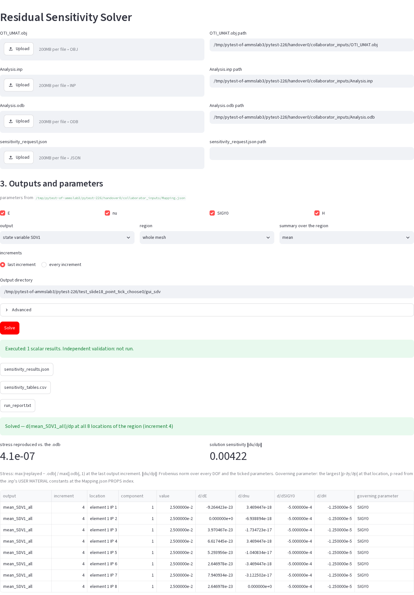

Residual Assembler takes a finished finite-element analysis and computes how its results change when you change a material parameter. It works from the saved results, so the analysis is not run again, and it never needs the material's source code.
Version residual-assembler 0.1.0
Interface the resasm command (18 subcommands) and a Streamlit GUI
Tested Linux (Ubuntu 20.04), Python 3.11.7, gfortran 9.4.0
Abaqus 2021.HF5, only to run analyses and read .odb files
This handbook teaches you to use Residual Assembler from the first installation to a full-size analysis. You will run every command yourself, see what it prints and learn what each file means. You will also learn how to tell whether a number is right. Each chapter builds on the one before it, but the command reference (chapter 8), the troubleshooting tables (chapter 13) and the quick reference (chapter 15) also work on their own.
Who this handbook is for
It is written for engineers and graduate students who know some finite-element mechanics and have used Abaqus. You should know what an input deck (.inp) and an output database (.odb) are, what an increment of a static step is, and roughly what a user material (UMAT) does: it receives a strain increment and returns the new stress, the updated state variables and the material tangent DDSDDE. You do not need to know anything about this program, about hypercomplex numbers or about sensitivity analysis. Those ideas are explained where they first appear.
Two people take part in a typical sensitivity study, and the handbook addresses both:
The analysis owner ran the Abaqus analysis. They hold Analysis.inp and Analysis.odb and want to know how the results depend on the material constants. Residual Assembler is their program, and most of this handbook is written for them.
The material owner wrote the UMAT. They use the companion program UMAT-OTI to compile the material into a provider that computes derivatives, and they hand over only the compiled object and a small description file. Chapter 12 explains that hand-over from Residual Assembler's side. The UMAT-OTI handbook covers the material owner's side.
The two roles can be the same person. In a class, you will usually play both.
What you need
Item
Needed for
Notes
Linux, x86-64
everything
verified on Ubuntu 20.04. On Windows use WSL 2 (chapter 4). macOS is not established.
Python 3.10 or newer, with venv, ctypes and ssl
everything
Residual Assembler alone accepts 3.9, but UMAT-OTI needs 3.10. Verified with 3.11.7.
gfortran
building a material provider and linking it at run time
verified with GNU Fortran 9.4.0
git
cloning; the pipeline script of Example 6 records commits
Abaqus (tested 2021.HF5)
running analyses, and reading an .odb through Abaqus Python
The sensitivity computation itself never calls Abaqus. An exported ODB can be replayed on a machine without Abaqus.
OTILib (external, GPLv3)
only the direct-residual routes: Example 1, Example 7, resasm sensitivity, resasm run with backend: otilib
built from source in about ten minutes (chapter 4). The Abaqus workflow does not need it.
How the handbook is organised
Start here: this chapter, with a ten-minute first run.
What Residual Assembler does: the problem, the residual method on a one-spring example, and why the material source stays private.
Key ideas and vocabulary: one table of the terms used everywhere else.
Installing: both packages, OTILib, the checks, the clean-install gate and common installation errors.
What goes in: the four-file request, field by field; resasm.yml; what an Abaqus deck may contain.
What comes out: every output file, with a real run_report.txt read line by line.
Which path to use: the five ways of using the program, and a decision table.
The command line: every subcommand with its options, a real run and its exit codes.
The GUI: every screen, with the two screenshots from the repository.
Five worked examples, each run from the command line and from the GUI, plus a summary of the other three.
Verification and reports: how a result is checked, what the verdict lines mean and what to quote.
Working with UMAT-OTI: how the material provider is made and checked on arrival.
Troubleshooting: symptoms, causes and fixes, grouped by where they occur.
Limits: what is refused, and why.
Quick reference and glossary.
Suggested reading routes:
You have an Abaqus analysis with a UMAT and want its sensitivities: chapters 2, 5 and 6, then Examples 4, 3 and 5, then chapter 11.
You can write your own residual (a prototype, a small model): Example 1, the resasm.yml part of chapter 5, and the black-box summary at the end of chapter 10.
You only want to see it work: the first run below, then Example 4, which needs neither Abaqus nor OTILib.
Conventions used in this handbook
Where to run. Every command runs from the root of the Residual Assembler checkout, with the virtual environment active. The companion checkout, UMAT-OTI, sits beside it as ../UMAT_source_transformation. When a command must run elsewhere (for example an Abaqus job), the text says so.
Where outputs go. Outputs go to a work folder outside the repository, named by the variable WORK, as in the repository's own walkthroughs. Set it once per shell:
Command
export WORK="$HOME/resasm_work"; mkdir -p "$WORK"
Quoted output is real. It was either measured in the repository's documentation on 2026-09-18 or 2026-09-19, or re-run for this handbook on 2026-09-19. Long outputs are shortened with ..., and absolute paths that the program prints are shortened to .../. Each measured number carries its date.
The command name. The package installs one program, resasm. python -m residual_core.ui.cli is the same program, which is useful when you work from a source checkout without installing it.
Example numbers are the repository's own (Example 1 to Example 8), so that you can open the matching WALKTHROUGH.md at any time.
A ten-minute first run
This run installs both packages and computes your first sensitivity: the derivative of a spring's displacement with respect to its stiffness and its load. It is the smallest complete use of the program. Example 1 in chapter 10 explains every line of it.
Get both repositories, side by side. Several scripts find the companion beside the main checkout, so keep them in one parent folder.
Create a virtual environment and install both packages.-e installs them in editable mode, so the commands use the code in your checkouts. The extras add the GUI (gui), YAML support (yaml) and the test tools (test).
Measured on 2026-09-18 in a new environment made from Python 3.11.7: the install took 40 s, and pip check printed No broken requirements found.
Ask the program what it can do. From now on, work in the Residual Assembler folder.
Command
cd Residual_Assembler
resasm --help
Output
usage: resasm [-h] [--config CONFIG]
{replay,request,history,inspect,requirements,assemble,verify,doctor,template,backends,sensitivity,modes,init,inspect-model,init-assembly,check,run,report}
...
Model-agnostic residual assembly framework
positional arguments:
{replay,request,history,inspect,requirements,assemble,verify,doctor,template,backends,sensitivity,modes,init,inspect-model,init-assembly,check,run,report}
replay compiled J2 C3D8 replay with total-history
sensitivities
request sensitivities from Analysis.inp, Analysis.odb,
OTI_UMAT.obj and sensitivity_request.json
history history replay for any provider: sensitivities from
Analysis.inp + Analysis.odb + OTI_UMAT.obj +
sensitivity_request.json
...
init start a job: copy a template (--template) or run the
interactive wizard
...
report summarize a completed run's output dir
options:
-h, --help show this help message and exit
--config CONFIG optional config file (.yml/.json)
Eighteen subcommands are listed. You have not learned any of them yet; chapter 8 covers each one.
Copy the spring job and run it. Example 1 needs OTILib. If you have already built it (chapter 4), point the two variables at its build folder first; otherwise read the callout after this list.
You have now used the program the way every job works: a small input, a check that stops at the first problem, a run, and a report whose public part you may share. The rest of the handbook explains the finite-element case, where the residual is not something you write yourself but something the program rebuilds from your Abaqus results.
2What Residual Assembler does
This chapter explains the idea behind the program before you meet its files and commands. It starts with the question that sensitivity analysis answers, derives the method on a model with one unknown, and then shows how the same equation is used on an Abaqus analysis. It ends with the privacy arrangement that lets a material's author share a material without sharing its source.
The problem: sensitivities of a converged analysis
A converged nonlinear finite-element analysis gives you displacements, stresses, reactions and state variables at every increment, for one set of material constants. Engineers then ask a second question: how would those results change if a constant changed a little? The answer is a set of derivatives, such as dU/dE or dRF/dSIGY0, called sensitivities. They tell you which parameters matter, how uncertainty in a parameter spreads into the result, and which way to move a parameter when you calibrate a model against a test.
The obvious way to get a sensitivity is a finite difference. You run the analysis again with the parameter raised by a small step h and again with it lowered, and you divide the change in the result by 2h. That needs two extra analyses per parameter, and each analysis may take hours. The answer also depends on h. A large step gives a truncation error. A small step drowns in noise, because an ODB stores single-precision numbers and every Abaqus increment is converged only to a tolerance. For the full-size J2 cantilever of Example 5, the repository's optional Abaqus finite-difference reference needed 24 more Abaqus runs. Even then, the exact derivatives and the Abaqus differences of the tip reaction agreed only to between 1.3e-3 (H) and 1.5e-2 (E), relative (measured 2026-09-18). That scatter belongs to the finite differences, which are limited by single precision and by the Abaqus convergence tolerance, not to the derivatives.
Residual Assembler computes the same derivatives from the saved analysis in one pass, with no step size, without running Abaqus again. It needs the input deck, the ODB and the material in a special compiled form, described below.
Abaqus cannot give you these derivatives itself, for a simple reason: it keeps its global residual vector internal. No output request and no ODB field hands you R. Residual Assembler therefore rebuilds R from its ingredients: the mesh, the material, the recorded displacements, the loads and the boundary conditions. The program's name comes from this step.
The residual method in plain terms
A static finite-element solution satisfies equilibrium: on every free degree of freedom (DOF), the internal forces balance the external forces. Write this as a residual that is zero at the solution:
R(u, p) = F_internal(u, p) − F_external = 0
Here u is the vector of nodal displacements and p are the material parameters. If a parameter changes, the solution u(p) changes with it, but the residual stays zero, because the new solution is also in equilibrium. So the total derivative of R with respect to p is zero:
(∂R/∂u) (du/dp) + ∂R/∂p = 0, that is, K du/dp = −∂R/∂p.
K = ∂R/∂u is the tangent stiffness: the same matrix a Newton solver factorises at every iteration. ∂R/∂p is the change of the internal force when the parameter changes with the displacements held fixed. The equation is linear, so one factorisation of K serves every parameter: each parameter is one more right-hand side. This is the whole method. The rest is bookkeeping: assembling K and ∂R/∂p correctly, and carrying the history of a plastic material from increment to increment.
A worked example with one unknown
Take a nonlinear spring whose force grows with the cube of its stretch. Its stiffness is k, the applied load is f, and the one unknown is the displacement u:
R(u; k, f) = k u³ − f, with k = 2, f = 16. The converged solution is u = 2, since 2 · 8 − 16 = 0.
Step
Formula
Value at the solution
Tangent
K = ∂R/∂u = 3 k u²
24
Residual derivative for k
∂R/∂k = u³
8
Residual derivative for f
∂R/∂f = −1
−1
Sensitivity to k
du/dk = −(∂R/∂k)/K = −8/24
−1/3
Sensitivity to f
du/df = −(∂R/∂f)/K = 1/24
0.041667
You can check this without the method. The spring has a closed-form solution, u = (f/k)^(1/3). Differentiating it directly gives du/dk = −u/(3k) = −1/3 and du/df = u/(3f) = 1/24, the same numbers. Now look back at the table your first run printed. The rhs_norm column holds the sizes of ∂R/∂k and ∂R/∂f (8 and 1), and the solution_sensitivity_norm column holds the sizes of du/dk and du/df (0.3333 and 0.041667). The program did exactly this calculation.
A finite difference of the same spring needs two extra nonlinear solves per parameter, and its answer depends on the step. On 2026-09-18, the resasm sensitivity command re-solved the built-in version of this spring at perturbed k and got −3.333330e-01, a relative error of 1.0e-06 against the exact −1/3. The residual method gave −3.333333e-01 exactly.
From one spring to an Abaqus analysis
In a finite-element model, u has thousands of entries and the residual is assembled from element contributions:
At increment n, σ_{n,q} is the stress at integration point q, B_q is the strain-displacement matrix, w_q is the integration weight times the volume factor, and F(t_n) are the external loads at that time. Only the stress depends on the material parameters; the loads and the prescribed displacements do not. So ∂R/∂p is the assembled B_qᵀ ∂σ/∂p, and K is assembled from the material tangent DDSDDE.
A plastic material adds one complication. The stress at increment n depends on the stress, the state variables and the strain of every earlier increment, and each of those also depends on p. The derivative must therefore include the whole history. The program carries dσ/dp and d(state)/dp from one increment to the next. It also feeds the change of the earlier displacements, du_{n−1}/dp, into the strain of the current increment. This is the total-history derivative. After each solve it updates the stress and reaction derivatives:
Output
K_ff du_f/dp = - dR_f/dp |_(u_n fixed), K = sum w B^T DDSDDE B,
dsigma_n/dp = dsigma^A/dp + DDSDDE B du_n/dp,
dRF_c/dp = dR_c/dp|_(u fixed) + K_cf du_f/dp.
The subscript f marks free DOFs and c constrained ones, and dσ^A/dp is the stress derivative at fixed current displacements (these formulas are quoted from docs/REPLAY_HISTORY.md). Example 6, summarised at the end of chapter 10, shows why the history matters. In its cyclic one-element model, a "fixed-path" derivative that ignores how earlier increments change with the parameter agrees with the total-history derivative until unloading begins. After that, the fixed-path du/dnu jumps to about −0.0018 while the total-history value is about −0.0005, and the two never meet again.
Replay, not re-analysis
The program never re-solves your production analysis. It reads the recorded displacements of every increment from the ODB, runs ("replays") the material at every integration point with the recorded strains, and reassembles R. It then checks two things before it trusts the replay. First, R must be close to zero on the free DOFs, which means the recorded state is in equilibrium. Second, the replayed stress, state and reactions must match the ODB at every point and increment, within limits set by the ODB's single precision. Only then does it solve the sensitivity equation. A replay is fast. The ten-increment beam of Example 4 takes about a second. The 1,536-element cantilever of Example 5 takes about 10 s of engine time, or about 25 to 28 s when every increment is first re-equilibrated (measured 2026-09-18).
Where the material derivatives come from
∂σ/∂p and DDSDDE must be exact, or the sensitivities are only as good as a finite difference. They come from order-truncated imaginary (OTI) numbers. An OTI number carries, next to its ordinary value, one imaginary part per parameter, e1, e2, and so on. If you evaluate a routine with E + e1 instead of E, every arithmetic operation carries the derivative with respect to E along. The result is σ + (∂σ/∂E) e1, with the derivative exact to machine precision. There is no step size and no subtraction of nearly equal numbers. "Order-truncated" means that products of imaginary parts beyond a chosen order are dropped. At order 1 you get first derivatives, and at order 2 second derivatives as well.
A Fortran UMAT does not understand OTI numbers. The companion program UMAT-OTI rewrites the UMAT's source so that it computes with OTI numbers, then compiles the original and the rewritten routine together into one object. Residual Assembler only calls that object.
Why the material's source never reaches the analyst
Material models are often confidential: a company's calibrated law, or a research code that is not yet published. The workflow is arranged so that the source never leaves its owner:
The material owner runs umat-oti-provider build (from UMAT-OTI) on the UMAT and a short contract that names the parameters. The build writes a compiled object and a completed contract, which the analyst receives as OTI_UMAT.obj and Mapping.json. The build folder, which contains the generated sources, stays with the owner.
The analyst runs resasm request with the deck, the ODB, the object and a request. No Fortran source is read.
The object contains the ORIGINAL routine, compiled unchanged, and its OTI version, in binary form, behind several entry points: UMAT (the ORIGINAL), UMAT_OTI_EVAL, UMAT_OTI_MARCH and UMAT_OTI_EVAL_TOTAL. One call of UMAT_OTI_EVAL_TOTAL per integration point returns everything the history engine needs. It returns the new stress and state, the tangent DDSDDE (taken from the provider's OTI strain directions), the parameter derivatives DSIGMA_DP and DSTATEV_DP, and the state's derivative with respect to the strain increment. The ORIGINAL routine serves the independent finite-difference checks of chapter 11, which re-run the unmodified material at perturbed parameters. (The bounded J2 engine also takes its virgin elastic tangent from it.) It is never used to read source or to rerun the production analysis.
Mapping.json tells Residual Assembler how to call the object. It holds the dimensions, the entry-point names and their argument lists, each parameter's name, PROPS index and OTI direction, the array layouts, a fingerprint of the ORIGINAL source and the SHA-256 of the object. Before a run, the request checks that the mapping belongs to the object you gave it.
The four-file request at a glance
The diagram shows who makes which file and where the results go. The dashed part happens on the material owner's machine.
flowchart LR
S["UMAT source"] -.-> B["umat-oti-provider build"]
B -.-> O["OTI_UMAT.obj + Mapping.json"]
I["Analysis.inp"] --> R["resasm request"]
D["Analysis.odb"] --> R
O --> R
Q["sensitivity_request.json"] --> R
R --> P["public: results, tables, run_report"]
R --> V["private/: export, full fields, link library"]
What the program is not
It is not a solver for your production model. It never runs an Abaqus analysis. It calls Abaqus Python only to read an .odb, and not at all when you give it an exported field file.
It computes first derivatives with respect to material parameters in the replay. Load, boundary-condition and shape sensitivities are not supported.
Its replay covers small-strain C3D8 analyses with one static step and one user material. Anything else is refused by name rather than approximated (chapter 14).
The same package does three more things, which later chapters cover. It assembles R from a model's ingredients (the "assembly" path), it differentiates a residual you write yourself in Python (the "direct" path, Example 1), and it solves with residual coefficients returned by your own private executable (the "black-box" path, Example 8). Chapter 7 helps you choose.
3Key ideas and vocabulary
The same two dozen terms appear in every output file, every error message and every later chapter. Read this table once now and come back to it when a word is unclear. The glossary in chapter 15 repeats the definitions in alphabetical order.
Term
What it means
Where you meet it
Residual R
Internal minus external nodal force, R = F_int − F_ext. It is zero on the free DOFs of a converged solution.
Residual assembled and Equilibrium passed lines of run_report.txt; resasm assemble
Free and constrained DOFs, reactions
Free DOFs are unknowns; constrained DOFs have a prescribed value. On constrained DOFs, R is the reaction force.
max|R_free|; RF outputs; resasm verify
Tangent K
∂R/∂u, assembled from the material tangent DDSDDE = ∂σ/∂ε. It is the matrix of the sensitivity equation.
Tangent available, Tangent verified
dR/dp (right-hand side)
How the residual changes with a parameter while the displacements are held fixed. With a minus sign it is the right-hand side of K du/dp = −dR/dp.
rhs_norm in sensitivity_norms.csv; R^(p)
Parameter
A material constant you differentiate with respect to. It has a name (E), a PROPS index (the position in the *User Material constants) and a value (read from the deck).
Mapping.json; "parameters" in the request
Sensitivity
The derivative of a result with respect to a parameter, such as dU1/dE.
derivatives in sensitivity_results.json
Total-history derivative
A derivative that includes how every earlier increment changes with the parameter. It is required for plasticity, and it is what the program computes.
Sensitivity semantics: total equilibrated history
Provider
The compiled material object, OTI_UMAT.obj. It holds the ORIGINAL UMAT and its OTI version, and it is built by UMAT-OTI.
--material
ORIGINAL
The untransformed UMAT, compiled into the same object. It serves the independent finite-difference checks (and gives the bounded J2 engine its virgin elastic tangent); it is never used to read source or rerun the analysis.
--verify tangent|fd, --validate
Mapping.json
The completed contract that the provider build writes beside the object: names, PROPS indices, layouts, entry points, source fingerprint and object hash. Use it unchanged.
--mapping; Category: material_mapping
Request
sensitivity_request.json: which outputs, which parameters, where (domain) and at which increments.
--request
Output, field, component, reduction, domain
One requested number: a field (U, RF, S, SDV, MISES) and a component, reduced over a region (the domain) by a sum, a mean, a maximum and so on.
"outputs" in the request; the rows of sensitivity_tables.csv
Increment
One converged step of the recorded history, numbered from 1. Increment 0 is the virgin, unloaded state.
"increments": "LAST", "ALL" or a list
Replay
Running the material again at every integration point with the recorded strains, to rebuild stress, state, R and K without re-running the analysis.
history replay: ...
Bounded engine and history engine
resasm request has a small, dense engine for one pinned J2 model. Every other readable model goes to the scalable history engine (resasm history), and the command says so.
the first line of resasm request output
Re-equilibration
--reequilibrate: a Newton polish of every recorded increment to double-precision equilibrium before the sensitivities are taken.
Mode: replay+reequilibrate
ODB parity
The comparison of the replayed stress, state and reactions with the ODB at every integration point and increment. Any excess over the single-precision limits stops the run.
Abaqus comparison available: yes (primal)
Homogeneity identity
For J2 with linear hardening (and the FCC crystal model), Σ p dQ/dp over the stress-dimensioned parameters equals Q for stresses and reactions and 0 for displacements. The engine does not use it, so it is an independent check.
p dQ/dp makes parameters with different units comparable. A share is each parameter's weighted magnitude as a percentage of their sum.
weighted; sensitivity_shares.csv
Public and private outputs
Public files are summaries you may share. private/ holds full arrays, exports and link libraries, and stays with you.
the Public and private outputs separated line
Coefficient and derivative
OTI yields Taylor coefficients. The derivative is the coefficient times a recovery factor, the product of the factorials of the direction's exponents (1 at first order, 2 for d²/dk²).
U_coefficients and U_derivatives; recovery_factor
Executed and verified
An ordinary run computes derivatives but checks them against nothing. Only an independent reference that resolved turns "calculated" into "verified".
verified=False; Derivative verified: not run
Backend and mode
A backend is the element code that assembles one element type. A mode is how R is assembled: stress-driven, material-replay, direct-residual or formulation.
resasm backends, resasm modes
Exit code
0 success; 1 the command ran and the answer is negative; 2 it could not run with these inputs; 3 OTILib was requested and is missing.
every command; the GUI's coloured result line
Three ideas that trip people up
Executed is not verified
An ordinary resasm request prints verified=False, and its report says Derivative verified: not run. Nothing went wrong. The program computed the derivatives exactly and replayed the ODB successfully, but it did not compare them with an independent method, so it does not call them verified. When you ask for a check (--verify fd), the report says yes only if the finite-difference reference itself resolved. Chapter 11 explains the whole ladder.
Coefficients are not derivatives
At second order, the OTI result for k + e1 carries ½ d²u/dk² in the e1² slot, the Taylor coefficient. In the spring, the raw coefficient of e1² is 1/9, while the derivative is 2/9. The program stores both and quotes derivatives in every public report, so you never apply the factor yourself. If you read a private array, read the *_derivatives keys.
Public is a choice, not a guarantee of emptiness
For a resasm.yml job, the public/ folder holds exactly five files: norms, rankings, status and timing, with parameter names but not their values. For a request, the three public files contain the scalar results you asked for, the request itself and metadata that includes the parameter values read from the deck and the SHA-256 of every input. A requested fields.npz holds the complete solution and its derivatives, so share it only if the model may be shared. Read what you send.
4Installing
This chapter takes you from an empty Linux machine to a working installation, and shows how to prove that it works. The two packages install in about a minute. OTILib, which only the direct-residual routes need, takes about ten minutes more. The measurements are from the repository's installation guide, docs/INSTALL.md, made on 2026-09-18 in a new virtual environment.
Two repositories, side by side
Residual Assembler and UMAT-OTI are separate products, connected by a versioned contract. Neither contains the other. Clone both into the same parent folder, because several scripts look for the companion beside the main checkout:
Measured on 2026-09-18 with Python 3.11.7: 40 s, and pip check reported No broken requirements found. Why each part is there:
python3 -m venv .venv creates an isolated environment, so these packages cannot disturb other Python work. If your default python3 is older than 3.10, name a newer one, for example python3.11 -m venv .venv.
-e (editable) makes the installed commands run the code in your checkouts, so the examples and templates are found where they are and a git pull takes effect at once.
The extras: gui adds Streamlit, yaml adds PyYAML (a minimal YAML reader is bundled if you leave it out), test adds pytest and the test tools.
pip check confirms that every installed package has compatible dependencies.
Two commands are now on your PATH:
Command
Package
What it does
resasm
Residual Assembler
every workflow in this handbook
umat-oti-provider
UMAT-OTI
builds a compiled material provider (OTI_UMAT.obj and its mapping) from a UMAT and its contract
OTILib: what it is and when you need it
OTILib is the library that implements OTI arithmetic in Python. It is GPLv3, developed separately, and never copied into this repository. Residual Assembler uses it when it has to evaluate a residual with OTI numbers, which happens on the direct-residual routes. The Abaqus workflow does not use it, because there the compiled provider carries its own Fortran OTI implementation.
Workflow
OTILib needed?
resasm request, resasm history, resasm replay (Examples 3 to 6)
What each line does: it installs the two build tools at the versions the validated procedure used, clones OTILib, checks out the pinned commit, configures a CMake build without OTILib's own tests, compiles the Python extension modules (oticython) and generates the data tables (gendata). Measured on 2026-09-18: every command exited 0 (the compiler prints many warnings, which is normal). oticython took 8 min 45 s and gendata 8 s. The build must be made with the same Python version as your environment. docs/OTILIB_VENV.md shows the same procedure in a fully isolated shell.
With Conda, bash Residual_Assembler/scripts/setup_otilib.sh [TARGET_DIR] clones OTILib, creates a Conda environment pyoti and builds it. It needs git, cmake and conda. It was not re-run for the installation guide.
Tell Residual Assembler where the build is. Point both variables at the build directory, not the source folder, in every shell where you use the OTILib routes, and check:
A working build prints 'available': True and 'api_module': 'pyoti.sparse' (re-run 2026-09-19). Without OTILib, every command that needs it stops with OTILib backend requested but genuine OTILib was not found and never falls back to anything else.
The permissive test sources
The offline test suite and a few inspection examples read Abaqus input files from external git submodules, pinned to fixed commits. They come in three licence tiers. The script fetches only the permissive tier (MIT, BSD-3). The copyleft and licence-unknown tiers are marked update = none and are never fetched by setup.
Command
./scripts/init_permissive_sources.sh # the sources the tests need
./scripts/init_permissive_sources.sh --check # show the state, fetch nothing
--check prints each submodule's pinned commit and confirms that the restricted tiers are empty (-> 0 entries). None of the eight worked examples needs these sources. Without them, the tests that read them are skipped, and each skip names the file it needs and this command.
Check the installation
Run these from the Residual_Assembler folder with the environment active. Each check exercises a different part of the installation, from the command-line entry point to the GUI.
A first sensitivity with neither Abaqus nor OTILib. This builds the J2 material provider and replays the committed Abaqus beam of Example 4. It tests UMAT-OTI, gfortran and the history engine together.
history replay: 10 increments, 768 integration points, 4 parameters; yes: max|R_free| = 1.288e-03 N at increment 10 (limit 1.609e-01 N there)
results: .../beam/sensitivity_results.json
$WORK/beam/run_report.txt must begin with Status: executed successfully. Re-run on 2026-09-19: identical line, exit 0, in 0.9 s; the provider build took 5.8 s.
Both packages together, with an independent check. The pipeline script of Example 6 builds the provider again, solves a cyclic history and verifies every derivative against finite differences:
manifest.json must contain "passed": true. Measured: 9.9 s in a fresh environment without OTILib (2026-09-18). Re-run on 2026-09-19 from a development setup with --imports environment: "passed": true in 9.9 s.
Every line must read [ok], including [ok] OTILib available: order 2, basis 2.
The GUI starts.
Command
streamlit run scripts/app.py
Open the address it prints (by default http://localhost:8501). The first tab is Sensitivity Request. On 2026-09-19 a headless start answered its health check (/_stcore/health returned ok) two seconds after launch. Stop the server with Ctrl+C.
The offline test suite (optional, several minutes).
Command
python -m pytest -q -m "not abaqus and not arc and not network"
The OTILib tests run when PYOTI_PATH and OTILIB_ROOT point to a working build, and are skipped by name when it is missing. Set RUN_OTILIB_TESTS=1 whenever OTILib is meant to be present, so that a broken build fails those tests instead of skipping them. If the packages were installed from wheels rather than with -e, first set export UMAT_OTI_REPO="$PWD/../UMAT_source_transformation", because the history-replay and verification tests read the UMAT models from that checkout. The full suite passed from clean clones on 2026-09-19 with 647 passed, 20 skipped and 0 failed.
Every example that needs no Abaqus, in one command (optional, about 4 min, needs OTILib).
It first checks otilib_status() and the transform fingerprint, then runs the commands of each walkthrough in order, checks each result against the example's reference and stops at the first failure. Measured on 2026-09-19 with both packages installed from wheels: all 31 commands exited 0 and every check passed, in 3 min 24 s.
The transform generation
Evidence about a transformed material belongs to the version of the transformer that produced it. That version is identified by a transform generation fingerprint, recorded in schemas/transform_generation.json, a file that is identical in both repositories. To check that your UMAT-OTI computes the generation this repository expects:
Both lines must be equal (re-run 2026-09-19). The contract tests tests/contract/test_the_two_repositories_speak_one_contract.py and tests/framework/test_a_fixture_is_held_to_the_rule_that_froze_it.py reported 26 passed.
The clean-install gate and the one-command reproduction
The checks above test your installation. scripts/clean_install_gate.py tests whether the published code can be installed and used by someone who has nothing else: it is the acceptance test of an installation. It needs Abaqus, because it reads two real ODBs.
This synopsis is not runnable as written: replace the paths and drop the options in brackets that you do not need. What the gate checks, in order:
Both repositories are git checkouts with no uncommitted or untracked files, so the result describes a commit.
The given Python is 3.10 or newer with ctypes, ssl and venv; gfortran and the Abaqus launcher are on PATH.
It creates a new virtual environment with a scratch HOME, builds a wheel of each repository, installs both and runs pip check. It verifies that the packages come from the new environment, that nothing is editable and that the packaged data files are present.
It builds the J2 provider with the installed umat-oti-provider.
It runs the four-file request of Example 3 on the ODB you give and compares the derivatives with the uniaxial closed form: relative error below 2e-5, and |dU1/dnu| below 1e-8.
It repeats the request with every read of a Fortran source denied and requires identical public files.
It renders both installed GUIs headlessly and starts each server until it answers over HTTP.
With --cantilever, it runs the full-size J2 cantilever of Example 5, re-equilibrates it and requires the homogeneity identity at every increment to 1e-10.
Its two Abaqus inputs are made once, from the folder that holds the two checkouts, into a folder outside them. These commands run Abaqus analyses. They need a licensed Abaqus with a Fortran compiler configured for user subroutines, and they were not re-run for this handbook:
Judge each job by THE ANALYSIS HAS COMPLETED SUCCESSFULLY in its .sta file. Abaqus 2021.HF5 can abort with signal 6 during teardown after writing a complete ODB. Then give the gate --odb "$IN/one_element/Analysis.odb" --cantilever "$IN/cantilever".
From fresh clones, all at once.scripts/reproduce_from_clean_clones.sh does everything in this chapter from fresh clones of the published main branches. It drops the calling shell's Python settings, clones both repositories, runs the gate, runs both offline test suites and the examples check in the gate's environment, and records each step's exit code in summary.tsv. It needs the OTILib build and the two Abaqus inputs, and takes about 30 minutes:
The recorded run (docs/evidence/final_clean_clone.md, 2026-09-19, Residual Assembler bf3600c, UMAT-OTI 5dcdd8d) took 26 min 40 s, and every step exited 0:
Step
Time
Result
clone both repositories
5 s
both on main, each at the published head
clean-install gate
109 s
all 22 commands exited 0; the gate passed
Residual Assembler offline suite
462 s
647 passed, 20 skipped, 0 failed
UMAT-OTI suite
820 s
3399 passed, 160 skipped, 0 failed
worked examples
204 s
31 of 31 commands passed their checks
Inside the gate, the one-element request matched the closed form to 1.7e-7 (E), 8.7e-16 (initial yield stress) and 8.8e-9 (H). The source-denied outputs were byte-identical. The full-size cantilever request took 21.7 s, and its re-equilibrated replay 30.8 s, with the homogeneity identity holding to 1.4e-12.
Updating
Because both packages are installed in editable mode, pulling new commits changes the commands immediately. After an update:
Pull both repositories (git -C Residual_Assembler pull, git -C UMAT_source_transformation pull), and keep them at a pair that works together (docs/COMPATIBILITY.md).
Re-run the pip install -e line and pip check, in case the dependencies changed.
Compare the two transform fingerprints again.
Rebuild your material providers. The history engine refuses an object built by an older UMAT-OTI that lacks the UMAT_OTI_EVAL_TOTAL entry point, with a rebuild message.
Repeat checks 2 and 3 above.
If you change the Python version of the environment, rebuild OTILib too: it must match the environment's Python.
Windows: use WSL
The compiled providers and OTILib are built with the GNU toolchain and verified on Linux only. On Windows, install WSL 2 with Ubuntu (wsl --install -d Ubuntu in PowerShell). In the Ubuntu shell, install python3 python3-venv gfortran git, confirm that python3 --version is 3.10 or newer, and follow this chapter from the beginning. Keep the repositories under the Linux file system (for example ~/resasm), not under /mnt/c, for speed. WSL 2 forwards local ports, so the GUI started inside WSL normally opens in the Windows browser. Abaqus itself can stay on Windows. Export the ODB there with abaqus python residual_core/replay/odb_export_npz.py -- Analysis.odb fields.npz and replay the export inside WSL with resasm history --fields.
Common installation errors
What you see
Why
What to do
resasm: command not found
The virtual environment is not active.
. .venv/bin/activate
pip refuses umat-oti because it requires a different Python
UMAT-OTI needs Python 3.10 or newer.
Create the environment with such a Python: python3.11 -m venv .venv.
umat-oti-provider build fails, or a request stops while linking the material
gfortran is missing.
sudo apt-get install gfortran (Debian, Ubuntu).
OTILib backend requested but genuine OTILib was not found
The two variables are unset, point at the source folder, or the build is for another Python.
Set PYOTI_PATH and OTILIB_ROOT to the build directory; if it still fails, rebuild with the environment's Python.
import pyoti works but the adapter reports it unavailable
The unrelated PyPI package pyoti is installed.
pip uninstall pyoti, then build OTILib from source.
No module named umat_oti.provider from reproduce_connected_pipeline.py
The isolated Python it starts sees an older UMAT-OTI installation.
Reinstall both packages, or pass --imports environment when you work through PYTHONPATH.
Tests skip with a message naming sources/permissive/...
The permissive sources were not fetched.
./scripts/init_permissive_sources.sh
The GUI port is taken
Another server uses port 8501.
streamlit run scripts/app.py --server.port 8502
5What goes in
This chapter describes every input file, field by field, using the real files shipped with the repository. It covers the four files of the Abaqus route first, then resasm.yml, which drives the other routes. It ends with what an Abaqus deck may and may not contain, because most refusals you will meet come from there.
The four-file request
Analysis.inp
The input deck of the finished analysis, exactly as it was run. The program reads it with its own parser: the mesh, the node and element sets, the *User Material constants, the boundaries, the loads and the step. It is the only source of the parameter values, and every replay compares it with the ODB.
Analysis.odb
The output database of that analysis. The program reads it through Abaqus Python (abaqus python), which needs a licensed Abaqus. Instead of the ODB, resasm history also accepts an export made once on a machine with Abaqus (fields.npz).
OTI_UMAT.obj + Mapping.json
The material, compiled by UMAT-OTI into a provider object, and the completed contract that describes it. Both come from the material owner. The mapping must sit beside the object, or be named with --mapping.
sensitivity_request.json
What you want: which outputs, with respect to which parameters, over which region, at which increments. You write it, or the GUI writes it for you.
Analysis.inp, block by block
This is the one-element deck of Example 3, complete:
The mesh. C3D8 is the only supported solid element, and Abaqus's default selective-reduced (B-bar) integration is reproduced. Node ids, coordinates and connectivity are compared with the ODB.
*Nset, *Elset
Named regions. The history engine accepts them as request domains ({"nset": "LOADED"}), and the GUI offers them as regions.
*Depvar, *User Material, constants=4
The number of state variables and the PROPS vector. The value of each parameter is the constant at the PROPS index the mapping gives: here E = 210000, nu = 0.3, SIGY0 = 250, H = 2000. The count must equal the provider's nprops.
*Solid Section
One user material on every element.
*Boundary (model data)
Prescribed zero displacements. Their derivatives are zero, since boundaries do not depend on the parameters.
*Step, nlgeom=NO, *Static
One static step, small strain. 0.25, 1., 0.25, 0.25 fixes the increment at 0.25 of a step of length 1, so there are four increments.
*Cload
Concentrated loads, ramped from zero over the step (the Abaqus default for a static step). Loads do not depend on the parameters.
*Output, field, frequency=1
Every increment must be written to the ODB, with U, RF, S and SDV. The bounded engine also reads CF, to check the applied loads against the deck.
The beam of Example 4 shows the other forms the history engine accepts: a clamped root (ROOT, ENCASTRE), a nonzero prescribed displacement inside the step (TIP, 2, 2, -0.08), a *Static, direct step with fixed increments and a *Controls line that only tightens the solver tolerances:
The ODB must hold every increment through the end of the step, including frame 0 (the virgin state), for all nodes and elements. Missing frames are never interpolated. Its fields are single precision, and the replay's tolerances are built from that fact (chapter 11). Three ways of reading it exist, for three purposes:
Reader
Command
Writes
Used by
automatic, inside the request
resasm request --odb Analysis.odb (or resasm history --odb) calls abaqus python; --abaqus PATH names another launcher
private/fields.json (bounded engine) or private/fields.npz (history engine)
the same run; the history export can be reused later with --fields
The object is binary; you never open it. The mapping is JSON, and knowing its fields helps you understand the refusals. This is the mapping written by umat-oti-provider build for the J2 model on 2026-09-19, shortened where marked:
anything else is not a completed mapping; the GUI then says Mapping.json could not be read
kinematics, dimensions
small strain; ntens stress components, nprops constants, nstatev state variables, nparam parameters
nprops must equal the deck's constants= count
symbols
the entry points in the object and their argument lists
the history engine needs oti_eval_total; older objects without it are refused with a rebuild message
layouts
array shapes and the Voigt order 11, 22, 33, 12, 13, 23
the stress component numbers in your request follow this order
parameters
each parameter's name, PROPS index and OTI direction
the names you may request, and where their values sit in the deck
object.sha256_full
the SHA-256 of the object this mapping belongs to
a renamed object is accepted only if its hash matches
regular_source_hash
a fingerprint of the ORIGINAL source
the bounded engine accepts only the pinned J2 fingerprint; any other provider goes to the history engine
validation
not_run: the build checks linking, not correctness
correctness is established by UMAT-OTI's separate verifier (chapter 12)
How the mapping is found. With --mapping PATH, that file is used. Otherwise the program looks beside the object for <object-stem>.json and then for Mapping.json. Mapping.json is only a new name for the unchanged generated file, not a different format. That is why the material owner may rename the pair to OTI_UMAT.obj and Mapping.json: the object's SHA-256 inside the mapping still ties them together. Always hand over the generated completed file, never the contract_v2.json the build started from. If no mapping is found, the request stops before it reads the ODB (measured 2026-09-19):
Output
request failed: Category: material_mapping
Action: Check the completed mapping sidecar or --mapping and its object hash, source fingerprint and layouts.
Private diagnostics: private/error_report.txt
and private/error_report.txt ends with ValueError: missing completed mapping: place the generated object-stem .json or Mapping.json beside OTI_UMAT.obj, or use --mapping.
sensitivity_request.json, field by field
The request names what to differentiate. This is the request of Example 3, examples/presentation_request/sensitivity_request.json:
Read it as four questions. How does the mean U1 of the loaded face change? How does the total support reaction change? How do the mean S11 and the mean equivalent plastic strain change? Each is asked with respect to all four constants, at the last increment. The last two outputs have no domain of their own, so they use the request's default domain, all elements.
Top-level keys
Key
Required
Value
outputs
yes
a non-empty list of outputs (next table)
parameters
yes
unique parameter names from the mapping, for example ["E", "SIGY0", "H"]. The history engine also accepts "ALL" (all parameters, in the provider's order)
domain
yes
the default region for outputs without their own, for example {"nodes": "ALL", "elements": "ALL"}
increments
yes
"LAST", "ALL" or a list of unique one-based increment numbers such as [2, 4]. The whole history before them is always replayed
weighted_shares
no, history engine
{"field": "MISES", "domain": {"elements": "ALL"}}; field may be MISES (default), S or SDV. Writes sensitivity_shares.csv
full_field
no, history engine
true writes fields.npz with every field and its derivatives at every increment
One output
Key
Value
name
a unique, non-empty label for the rows of the tables
field
U (displacement) or RF (reaction) at nodes; S (stress), SDV (state variables) or MISES (von Mises stress, history engine only) at integration points
component
one-based, or "ALL". U, RF: 1 to 3. S: 1 to 6, in the order 11, 22, 33, 12, 13, 23. SDV: 1 to the number of state variables (on the bounded engine only SDV1, the equivalent plastic strain). MISES: 1
reduction
how the selected values become one number (next table)
domain
optional; overrides the request's domain for this output
Reductions
Reduction
Result
Engines
component
the value at exactly one location (one node or one point, one component)
both
sum
the plain sum, not a spatial integral
both
mean
the plain mean, not volume-weighted
both
volume_mean
the mean weighted by integration-point volumes det(J) w_q; integration-point fields only
history
L2
the Euclidean norm (not von Mises); a zero field is refused as not differentiable
both
max, min
the signed extreme. If it is reached at several locations whose derivatives differ, the output is refused as not differentiable
max: both; min: history
Domains
Key
Meaning
Engines
nodes
"ALL" or a list of node ids (for U, RF)
both
elements
"ALL" or a list of element ids (for S, SDV, MISES); all eight integration points unless points is given
both
nset, elset
a node or element set of the .inp
history
points
a list of integration points, 1 to 8
history
The history extensions together, from the full-size J2 cantilever of Example 5:
Unknown keys, fields, reductions or ids are refused. Nothing is silently dropped. A set name that does not exist is refused with the list of the sets that do, for example unknown node set 'NOPE' (available: ['ROOT', 'TIP', 'TIPMID']) (measured 2026-09-19 on the beam).
Only first derivatives with respect to material parameters are computed.
The parameter value used for the weighted derivative p dQ/dp and for the shares is the deck's constant at the mapping's PROPS index.
Which engine takes the request
resasm request decides, for every request, which engine runs, and says so. The bounded engine keeps a request only when all of these hold:
it can read the deck, and the mapping belongs to the pinned J2 provider (m3_j2);
every boundary is zero-valued and the deck has concentrated loads;
the request uses only the four core keys, with fields U, RF, S or SDV, reductions component, sum, mean, L2 or max, and node or element id domains.
Anything else goes to the history engine, and the first line of output names the reason. On 2026-09-19, adding a MISES output to the one-element request printed:
Output
resasm request: outside the bounded presentation scope (output 'mises_mean' needs the history engine (field/reduction)); using the history replay engine
If the history engine cannot take the model either, its own refusal names the real reason. "parameters": "ALL" is a history-engine extension. On a model that stays on the bounded engine, such as Example 3, it is refused with Category: request_schema: give the list of names there.
resasm.yml: the job file of the other routes
The routes that do not start from an Abaqus analysis are driven by one small YAML file, resasm.yml. It has two dialects, and one key decides which:
a file that names a residual: is a provider configuration: the direct Python route or the black-box route;
a file that names a mesh: is an assembly recipe.
resasm check and resasm run accept both. All relative paths inside the file are resolved against the folder that holds it, so the commands work from any directory. A black-box command also runs with that folder as its working directory.
a label that appears in metadata.json and summary.md
problem.unknowns
no
the number of DOFs. It is inferred from the solution vector; if you give it, the two must agree, and a mismatch is an error, never a silent truncation
residual.type
yes
python or executable. (element is accepted but treated exactly like python; it does not assemble a mesh)
residual.module, residual.function
for python
the file and the function residual(u, params, state=None, time=None) that returns R
residual.command
for executable
a command containing {request} and {response}, which the program replaces with file names
tangent.type
some tangent must resolve
python (a tangent() function in the same module), file (tangent.file, .npz or .npy) or response (the black box returns it)
parameters
yes
name: value pairs. The order of the keys is the OTI basis order: the first key is e1, the second e2, and every output column follows that order
solution.file or solution.values
yes
the converged solution u. Nothing checks that it is converged except the residual norm on the Python route
sensitivity.order, sensitivity.backend
order yes
derivative order q: orders 1 to q are solved. The Python route always uses OTILib
constraints.prescribed or .free
no
0-based DOF indices; by default every DOF is free. Prescribed rows of the sensitivities are zero
state, time
no
passed through to your residual; the program does not interpret them
output.dir
no
the output folder, by default resasm_output
validation.rhs_finite_difference_check
no
a finite-difference check of dR/dp at fixed u, on the Python route only (chapter 11 says what it proves)
The residual function must use ordinary arithmetic (+ - * / **) on u and params, because the same function is called once with plain numbers and once with OTI numbers:
File · user_residual.py (the python template)
def residual(u, params, state=None, time=None):
k = params["k"]
f = params["f"]
return [k * u[0] ** 3 - f] # cubic spring: R = k u^3 - f
def tangent(u, params, state=None, time=None):
# optional. dR/du at the real solution (plain floats here).
k = params["k"]
return [[3.0 * k * u[0] ** 2]]
Here the program never reads your code. It writes a request.json (the solution, the parameters, the seed directions, the order and the direction map), runs your command, and reads back response.npz with arrays R_order_<p> and, optionally, tangent. Both files live in a temporary folder that is deleted when the call returns. At order 2 and above, your executable must return Taylor coefficients, not derivatives (coefficient = derivative / Π κ_i!); see docs/blackbox_order2_contract.md.
The assembly-recipe dialect
resasm init-assembly writes a recipe from a model and reports what it inferred. For the one-element deck it wrote this file on 2026-09-19 (the absolute path shortened):
Everything else, from the boundaries to the element backend, was inferred from the mesh. The recipe also lists what is still missing (chapter 8). The recipe dialect reads mesh, fields.solution, material, formulation, stimuli, state, time, constraints, tangent, sensitivity, parameters and output. For C3D8 it can assemble and check R, but it reports OTI-differentiate R: NO. Sensitivities of C3D8 models with a UMAT come from the request route instead.
The templates
--template
Folder
You provide
OTILib?
python
templates/user_python_residual/
residual(u, params) in Python; derivatives at any order
yes
blackbox
templates/user_blackbox_residual/
an executable returning first-order residual coefficients
no
blackbox-order2
templates/user_blackbox_order2_residual/
an executable returning coefficients up to order 2
no
cpp
templates/user_cpp_residual/
the residual in C++, with a CMakeLists.txt
no (black-box route)
fortran
templates/user_fortran_residual/
the residual in Fortran, with a Makefile
no (black-box route)
What the deck may and may not contain
The program replays only what it can reproduce exactly. Everything else is refused with a named reason rather than approximated, because an approximated replay would give plausible but wrong derivatives. The table summarises the scope of the three code paths that read a deck.
Feature
History engine (resasm history)
Bounded engine (resasm request)
General assembly (inspect, assemble, verify)
Element
C3D8, selective-reduced (B-bar)
C3D8 with B-bar
C3D8 solid backends; small truss, beam and spring reference elements
Steps
exactly one *Static step
one named *Static step
one step (several steps are reported as out of scope)
Geometry
NLGEOM=NO only
NLGEOM=NO
NLGEOM=YES only with a finite-strain backend
Material
one user material on every element, any provider
the pinned J2 provider only
from a stress field, or a built-in material
Boundaries
zero-valued model-data boundaries (ENCASTRE, PINNED, XSYMM, ... or DOF ranges); step boundaries of any value, ramped
zero-valued only
Dirichlet and symmetry; *Equation and MPCs parsed but not applied
Loads
*Cload, ramped from zero
ramped concentrated loads
*Cload only; *Dsload and *Dload parsed but not applied
*Controls
accepted (solver settings only)
refused by the bounded reader (goes to history)
Initial state
virgin only
virgin only
Refused outright
amplitudes, OP=NEW, other elements, several steps or materials, NLGEOM, distributed and body loads, nonzero initial state
everything outside the list above goes to the history engine
verify refuses any deck whose loads or constraints it does not apply
Real refusals, measured on 2026-09-19 by editing copies of the example decks:
Change to the deck
Command
Message (exit 2)
nlgeom=YES
resasm history
history replay failed: NLGEOM=YES: the history replay is small strain only
a second *Step
resasm history
history replay failed: exactly one *step block is required (found 2)
a *Dload (gravity)
resasm history
history replay failed: unsupported INP keyword *Dload
type=C3D8R
resasm history
history replay failed: element type C3D8R: the history replay supports C3D8 (selective-reduced B-bar) only
a 10-constant provider on a 4-constant deck
resasm history
history replay failed: the deck has 4 USER MATERIAL constants; the provider contract declares NPROPS=10
a *Dsload
resasm verify
Cannot verify equilibrium: the deck asks for what the residual does not apply, so its equilibrium cannot be verified: *Dsload (1 line(s)): parsed but not applied; the residual carries no distributed surface load
A failed history run still writes run_report.txt, whose Unsupported feature detected line repeats the reason, for example Unsupported feature detected: yes: NLGEOM=YES: the history replay is small strain only. Commands that only inspect a deck do not refuse; they list the keywords they will not apply under Deck keywords present but NOT applied and print a DeckKeywordNotApplied warning on standard error:
Output
Deck keywords present but NOT applied (the residual omits them):
- *Dsload (1 line(s)): parsed but not applied; the residual carries no distributed surface load
What the replayed UMAT receives
The history engine calls the material with STRESS, STATEV, STRAN (the B-bar strain at the start of the increment), DSTRAN, TIME, DTIME, PROPS, COORDS (the integration point), CELENT (element volume to the power 1/3), NOEL, NPT, KSTEP=1 and KINC. DROT, DFGRD0 and DFGRD1 are the identity, and TEMP and PREDEF are zero. A UMAT that reads those is outside the scope.
6What comes out
This chapter lists every file the program writes and shows how to read each one. The files of a request or history run come first, then those of a resasm.yml job. Each run splits its output into public files, which you may share, and a private/ folder, which stays with you.
Files of a request or history run
sensitivity_results.json
Public. The request as used, the resolved scope, metadata, and one entry per output and increment with value, derivatives (one per parameter) and, from the history engine, weighted (p dQ/dp). The metadata includes the ODB parity numbers, tolerances, timings, the parameter values and the SHA-256 of every input. metadata.verified is true only when --verify fd verified the derivatives.
sensitivity_tables.csv
Public. The same results flattened into one row per output, increment and parameter, ready for a spreadsheet.
run_report.txt
Public. What was executed, what was checked and with which tolerances, and the limits. Read it first after every run.
sensitivity_shares.csv
Public, history engine, only when the request has weighted_shares. Per increment and parameter: the field share, the scalar share, the field weight and the volume-mean von Mises stress.
fields.npz
History engine, only when the request has "full_field": true. Every field and its derivatives at every increment. It is written at the top of the output folder and listed as public, but it contains the whole solution: share it only if the model may be shared.
private/
Stays with you. History engine: run_details.json (per-increment residuals, parity, Newton corrections, sensitivity-solve residuals), the ODB export (fields.npz when --odb was used) with its log, and link/, the small generated library that links the provider. Bounded engine: result.json (full fields and derivatives at every increment), fields.json (the ODB export), export_command.json, odb_export.log and link/. After a failure: error_report.txt with the original exception.
Every run needs a new or empty output folder. A folder that holds anything is refused, so that files of two runs can never be mixed. This includes the folder of a run that failed.
run_report.txt, line by line
This is the report of the Example 4 replay, re-run on 2026-09-19. Only the Command executed line has been shortened:
File · $WORK/beam/run_report.txt
Status: executed successfully
Command executed: yes: resasm history --model examples/replay_history/j2_beam/Analysis.inp --fields examples/replay_history/j2_beam/fields.npz --material .../provider_j2/umat_m3_j2_oti.obj --request examples/replay_history/j2_beam/sensitivity_request.json --out .../beam --verify none --fd-steps 1e-3,3e-4,1e-4,3e-5,1e-5 --abaqus abaqus
Residual assembled: yes: C3D8 selective-reduced (B-bar), 96 elements, 768 integration points, 585 DOF, 10 increments, sparse assembly
Equilibrium checked: yes: free-DOF residual of the recorded state at all 10 increments
Equilibrium passed: yes: max|R_free| = 1.288e-03 N at increment 10 (limit 1.609e-01 N there)
Tangent available: yes: DDSDDE = dSTRESS/dDSTRAN from the provider's OTI strain directions
Tangent verified: not run
Derivative calculated: yes: total-history du/dp, dRF/dp, dS/dp, dSDV/dp, dMISES/dp for 4 parameters ['E', 'nu', 'SIGY0', 'H'] at 10 increments
Derivative verified: not run
Reference resolved: not applicable (no reference was run)
Abaqus comparison available: yes (primal): replayed S, SDV and RF reproduce the ODB at every integration point and increment; largest error/limit ratios: stress 0.005 (max |dS| 7.752e-04 MPa), reaction 0.005 (max |dRF| 5.666e-04 N), state 0.001 (max |dSDV| 2.366e-10); no Abaqus derivative reference is part of this request
Unsupported feature detected: none
Public and private outputs separated: yes: public ['sensitivity_results.json', 'sensitivity_tables.csv', 'run_report.txt', 'sensitivity_shares.csv']; private private/
Mode: replay
Parameters (provider order): ['E', 'nu', 'SIGY0', 'H']
Timings (s): {'material': 0.03, 'assembly': 0.038, 'factorisation_and_solve': 0.037, 'checks': 0.005, 'total': 0.114, 'wall_total': 0.464}
Tolerances: {'stress_parity': '|S_replay - S_odb| <= 8 eps32 max|S_n| + 8 eps32 ||D||_inf ||B||_inf max|U_n| ...', ...}
Production analysis rerun: no
Material source read or transformed: no
Line
What it tells you
Status
executed successfully or failed. Nothing else on the page matters if it says failed.
Command executed
the exact command, with every default filled in, so you can repeat the run.
Residual assembled
the element formulation, the mesh size, the number of increments and that the assembly was sparse.
Equilibrium checked, Equilibrium passed
whether the free-DOF residual of the recorded (or re-equilibrated) state stayed under its limit at every increment, with the worst increment and the limit there. The limit combines the force tolerance Abaqus itself accepted with the effect of single-precision displacements.
Tangent available
where K came from: the provider's DDSDDE, computed through OTI strain directions.
Tangent verified
not run unless you asked for --verify tangent or fd; then yes or a failure, with the measured error.
Derivative calculated
which derivatives were computed, for which parameters and increments.
Derivative verified
not run unless you asked for --verify fd; then yes only if the finite-difference reference resolved and agreed.
Reference resolved
whether the finite-difference reference reached a plateau: not applicable, yes or partially.
Abaqus comparison available
the ODB parity: replayed stress, state and reactions against the ODB, as the worst error divided by its limit. A ratio of 0.005 means the largest difference used half a percent of the allowance.
Unsupported feature detected
none, or the feature that stopped the run.
Public and private outputs separated
the list of public files this run wrote; everything else is in private/.
Mode
replay, or replay+reequilibrate with --reequilibrate.
Timings, Tolerances
where the time went, and every tolerance formula in words.
Production analysis rerun, Material source read or transformed
both no: the run did not start Abaqus and did not read any Fortran source.
The bounded engine writes a shorter report with the same spirit. Measured on the one-element ODB of Example 3 (2026-09-18):
Output
Status: executed successfully
Sensitivity semantics: total equilibrated history
Production analysis rerun: no
Material source read/transformed: no
Independent derivative verification: NOT RUN (execution is not independent verification)
History increments replayed: 4
Maximum scaled free residual: 4.12005847e-07 (limit 1e-5)
Checks: mesh ids/coordinates/connectivity; complete virgin-to-final history; time/ramped CF loads; prescribed displacements; free equilibrium; IP stress and state; reactions
Solver: constrained dense tangent solve; reactions Rp_history + K du/dp
A failed request writes a short report with a fixed category and an action, and keeps the details private (measured 2026-09-19 with --abaqus naming a launcher that does not exist):
Output
Status: failed
Independent derivative verification: not established
Category: odb_export
Action: Check --odb and --abaqus; licensed Abaqus Python with odbAccess and a complete field history are required.
Private diagnostics: private/error_report.txt
sensitivity_results.json
The top-level keys of a history run are schema (resasm_history_results_v1), status, request, scope, metadata, results and, when requested, weighted_shares. The request key stores the request exactly as used, which is how any GUI run can be repeated on the command line. The scope of the beam run reads:
metadata holds sensitivity_semantics, verified, verification, max_scaled_free_residual, parity, tolerances, timings_s, parameter_values, input_sha256 and regular_source_hash. Each entry of results is one output at one increment:
At increment 1 the beam is still elastic, so the yield stress and the hardening modulus have no influence (derivatives 0). Note also that the weighted derivative for E is almost exactly the value itself. That is the homogeneity identity at work: while the material is elastic, the reaction is proportional to E.
Six outputs, ten increments and four parameters give 240 rows. The bounded engine writes the same columns without weighted_derivative. In a spreadsheet, filter on output and parameter and plot derivative against increment to see how a sensitivity grows through the history.
A weighted share answers the question "which parameter governs this field right now?" Parameters have different units, so their raw derivatives cannot be compared: dq/dE is per MPa of a modulus near 200,000, while dq/dnu is per unit of a ratio near 0.3. Multiplying by the parameter value gives |p dq/dp|, in the units of q: to first order, a 1 % change of p changes q by 0.01 p dq/dp, whatever the units of p. For a field, the weight of parameter j at increment n averages this over the integration points, weighted by their volumes:
The scalar share applies the same formula to one number, the volume-mean von Mises stress. The two differ because the field share adds magnitudes point by point, while in the mean, contributions of opposite sign cancel.
fields.npz
With "full_field": true the history engine writes every field and its derivatives. For the beam, re-run on 2026-09-19 with that one key added (1.5 MB):
Array
Shape for the beam
Axes
U, RF
(11, 195, 3)
increment (0 to 10), node, component
dU, dRF
(11, 195, 3, 4)
... and parameter last
S
(11, 96, 8, 6)
increment, element, integration point, component
dS
(11, 96, 8, 6, 4)
... and parameter last
SDV, dSDV
(11, 96, 8, 1), (11, 96, 8, 1, 4)
as for S
MISES, dMISES
(11, 96, 8), (11, 96, 8, 4)
increment, element, point (, parameter)
ip_volume
(96, 8)
integration-point volumes
time, node_labels, elem_labels, parameters, parameter_values
(11,), (195,), (96,), (4,), (4,)
labels for the axes
Index 0 of the increment axis is the virgin state, so the last increment is len(time) - 1. This script reads the last increment, recomputes the volume-mean von Mises stress, counts which parameter governs each integration point and finds the largest dMISES/dSIGY0:
Command
python - "$WORK/beam_full/fields.npz" SIGY0 <<'EOF'
import sys, numpy as np
d = np.load(sys.argv[1])
names, p = [str(x) for x in d["parameters"]], d["parameter_values"]
n = len(d["time"]) - 1 # last increment
mises, dmises, V = d["MISES"][n], d["dMISES"][n], d["ip_volume"]
print("volume-mean von Mises:", (V * mises).sum() / V.sum())
weighted = np.abs(dmises * p) # |p dq/dp| at every point
governs = weighted.argmax(axis=-1)
print("governing parameter:", {names[j]: int((governs == j).sum()) for j in range(len(names))})
j = names.index(sys.argv[2])
e, q = np.unravel_index(np.abs(dmises[..., j]).argmax(), mises.shape)
print(f"largest |dMISES/d{names[j]}| = {abs(dmises[e, q, j]):.4e} at element {d['elem_labels'][e]}, point {q + 1}")
EOF
Output
volume-mean von Mises: 129.85782746075975
governing parameter: {'E': 84, 'nu': 0, 'SIGY0': 684, 'H': 0}
largest |dMISES/dSIGY0| = 9.9570e-01 at element 52, point 2
The volume mean agrees with the scalar output mises_mean of the same run (129.85782746075975). At the last increment, the yield stress governs 684 of the 768 points and E the other 84. $WORK/beam_full is made in the first exercise of Example 4.
Files of a resasm.yml job
resasm run writes one output folder, by default resasm_output/ beside resasm.yml, split in two:
Output
resasm_output/
private/ full numerical arrays; keep local
metadata.json
parameter_map.json
dof_map.json
residual_real.npz (black box: residual_real_UNAVAILABLE.json instead)
tangent.npz
rhs_order<p>.npz one per solved order
solution_sensitivities_order<p>.npz one per solved order
direction_map_order<p>.json what each column means, with recovery factors
validation_full.json
public/ safe to share
summary.md
timing.json
parameter_ranking.csv
sensitivity_norms.csv
validation_summary.json
public/ holds exactly these five files. They contain norms, rankings, status and timing, with parameter names but no parameter values, no source, no mesh and no full vectors. The parameter values you wrote in resasm.yml are not written to any output file, not even to private/.
solution_sensitivities_order<p>.npz
The answer. U_derivatives (the true partial derivatives), U_coefficients (the raw Taylor coefficients, also under the legacy key U), recovery_factors and direction_exponents. Shape (ndof, N), with one column per direction.
direction_map_order<p>.json
What each column means: its exponents, a label such as d2/dk2, its OTI label such as e1^2, and its recovery factor.
rhs_order<p>.npz
R^(p) and the right-hand side −R^(p), as coefficients and as derivatives.
residual_real.npz, tangent.npz
The real residual at the converged solution and the tangent used in the solve. A black box never returns the real residual, so on that route residual_real_UNAVAILABLE.json explains why instead of a vector of zeros that would look like verified equilibrium.
summary.md
A readable report: the run table, the parameter ranking, the derivative convention and, if it ran, the right-hand-side finite-difference check.
sensitivity_norms.csv, parameter_ranking.csv
One row per direction with the norms of the solution sensitivity and the right-hand side; the parameters ranked by their first-order sensitivity.
validation_summary.json, timing.json
Machine-readable status (resasm report reads it) and the run time.
To read the signed derivatives of the spring from private/:
Command
python - "$WORK/spring/resasm_output/private" <<'EOF'
import sys, numpy as np
p = sys.argv[1]
for order in (1, 2):
d = np.load(f"{p}/solution_sensitivities_order{order}.npz")
print(order, d["U_derivatives"][0], "coefficients:", d["U_coefficients"][0])
EOF
At order 1 the two rows agree. At order 2, the first and third columns (d2/dk2 and d2/df2) differ by the recovery factor 2, while the mixed column d2/dk_df has factor 1.
On the black-box route, summary.md says plainly what was not checked (measured 2026-09-19):
Output
| residual free-DOF norm | n/a — black-box did not expose real residual |
...
> **Equilibrium was NOT verified by this run.** The residual vector was never available (black-box did not expose real residual), so no residual norm could be computed. Nothing here should be read as confirming the supplied solution is converged.
Files of resasm sensitivity
resasm sensitivity --out PREFIX saves a package as PREFIX.json, PREFIX.npz and PREFIX.md, plus PREFIX_residual.*, PREFIX_sensitivity.*, PREFIX_state.* and PREFIX_validation.*. These files contain the full model and its arrays. There is no separate public folder for this command, so share only what the model owner allows.
scalar results, request, parameter values and input hashes; no full arrays
fields.npz (request with full_field)
only if the model may be shared
it holds the whole solution and its derivatives
private/ of a request
no
ODB export, full fields, link library
resasm_output/public/
yes
norms, rankings, status, timing; names but no values
resasm_output/private/
no
full arrays of your model
resasm sensitivity package
only with the model owner's consent
full arrays
7Which path to use
The program offers five ways in. They share the sensitivity equation but differ in who provides the residual. Read the table from the top and stop at the first row that describes your situation.
Your situation
Path
How you run it
Needs
You have a finished Abaqus analysis (.inp and .odb) with a UMAT, and a provider built from that UMAT
Analysis replay through the four-file request (the main workflow)
resasm request, or the GUI's Sensitivity Request screen
Abaqus Python to read the ODB; gfortran
The same, but you hold an exported fields.npz instead of the ODB, or you want re-equilibration, independent checks or the request extensions
Analysis replay, calling the history engine directly
resasm history
gfortran; Abaqus only with --odb
You want R itself from a mesh, a converged field and the boundary conditions, for example to check equilibrium of an exported stress field
Path A: assembly from ingredients
resasm inspect, requirements, assemble, verify; or a resasm.yml recipe with mesh:
nothing external for stress-driven assembly
Your model is private, but your own solver can return residual coefficients
Path B: black box
resasm.yml with residual.type: executable
your executable; no OTILib
You can write R(u, params) yourself: a prototype, a small custom model
Path C: direct residual
resasm.yml with residual.type: python
OTILib
Output
Analysis replay .inp + .odb + OTI provider + request -> WE replay the material and assemble R, K, dR/dp
Path A mesh + formulation + material + fields -> WE assemble R
Path B your private executable -> it returns R^(p) coefficients
Path C your own residual(u, params) -> you hand us R
(This summary is quoted from docs/which_path_should_i_use.md.)
Request or history?
Both run the same history engine for every model except the bounded J2 case. Use resasm request when you have the four files and want the simplest interface, or when you work in the GUI. Call resasm history directly in three situations. First, when you have an export instead of the ODB, perhaps on a machine without Abaqus. Second, when you want final numbers re-equilibrated to double precision (--reequilibrate). Third, when you want the independent checks --verify tangent or --verify fd. The usual pattern for a real study is: run resasm request once to export and get a first answer, then run resasm history --fields <out>/private/fields.npz --reequilibrate for the numbers you report.
Assembling is not differentiating
Path A can build R for a C3D8 model, but it cannot differentiate it with OTI numbers. The solid element kernels store their values in ordinary floating-point arrays, which cannot hold an OTI number. The program refuses rather than truncating the derivatives silently, so the recipe route reports:
Output
Capability:
assemble R : yes
OTI-differentiate R : NO
blocked: C3D8 -> solid_c3d8_finite_strain
Backend
Assemble R
OTI-differentiate R through a recipe
solid_c3d8_*, stress_driven_c3d8, truss2, beam2
yes
no
nonlinear_spring1, nonlinear_bar1
yes
yes
Sensitivities of C3D8 models therefore come from elsewhere. With a UMAT, they come from the analysis replay, which carries the derivative arrays beside the real ones so that the float kernels never hold an OTI number. For the bounded finite-strain neo-Hookean case they come from resasm sensitivity (Example 7), and for a private solver from Path B.
It reports what it found in the model, what it inferred for you, what is still missing and whether the recipe route can differentiate the model. Chapter 8 shows its output.
8The command line, command by command
Every workflow is a subcommand of one program, resasm. This chapter describes each subcommand: its purpose, its synopsis (the real --help text), the options that matter, one worked run with its real output, and its exit codes. The runs were made on 2026-09-19 unless a date says otherwise. Run them from the repository root, with WORK set as in chapter 1.
Conventions shared by every command
resasm --help lists the subcommands; resasm <subcommand> --help shows every option.
--config FILE (a .yml or .json) is a global option and goes before the subcommand: resasm --config config.json assemble model.json .... Put after the subcommand, it fails with resasm: error: unrecognized arguments: --config ... (exit 2).
Outputs are split into what you may share and what stays with you: request commands write public files at the top of --out and a private/ folder; job commands write public/ and private/.
Output folders of request and history must be new or empty, and init refuses an existing folder unless you add --force. replay is the exception: it writes into an existing folder (measured 2026-09-19), so give each of its runs a new one.
Exit code
Meaning
What to do
0
success
read the numbers
1
the command ran, and the answer is negative: a check failed (including a verification you asked for), or a job is not ready
the output names the failing check or the missing ingredient
2
the command could not run with these inputs: missing ingredient, bad path, unsupported model, usage error
fix the input the message names
3
OTILib was requested and is not installed (sensitivity, run)
build OTILib, or use a black-box template
resasm request
Purpose. The interface for the person who ran the analysis. From the saved deck, its ODB, the compiled material and a request, it computes the requested sensitivities without re-running the analysis and without the material source. Models inside the bounded single-material J2 engine's scope are solved there. Every other readable model is handed to the history engine, and the command says so.
Output
usage: resasm request [-h] --model MODEL --odb ODB --material MATERIAL
--request REQUEST --out OUT [--mapping MAPPING]
[--abaqus ABAQUS] [--validate]
Option
Meaning
--model
Analysis.inp, the deck of the finished analysis
--odb
Analysis.odb; read with Abaqus Python
--material
OTI_UMAT.obj, the compiled provider
--request
sensitivity_request.json
--out
a new or empty folder
--mapping
the completed mapping; by default <object-stem>.json or Mapping.json beside the object
--abaqus
the Abaqus launcher used to read the ODB (default abaqus)
--validate
add an independent finite-difference validation with the ORIGINAL routine; on the history engine this becomes --verify fd
Example (Example 3), in a folder holding the five input files. It needs the ODB and Abaqus Python, so its output is quoted from the recorded run of 2026-09-18 (1.1 s including the ODB export):
verified=False means that no independent check was requested: the numbers are computed, not validated. On a model that goes to the history engine (Example 5), the first line names the reason, for example unsupported *Static options: ['direct'], and the last reads request executed: history engine, 40 increments; verified=False.
Exit codes. 0: executed (and, with --validate, verified). 1: a run handed to the history engine executed, but its --validate did not pass; standard error names the check. 2: failed. The message names a category and an action, run_report.txt repeats them, and private/error_report.txt holds the details. On the bounded engine, a --validate that finds a disagreement is exit 2, category derivative_verification.
Category
Example cause
output_directory
--out exists and is not empty
odb_export
Abaqus Python not found, or the export failed
material_mapping
no mapping beside the object, or it belongs to another object
request_schema
the request does not match the format, for example "parameters": "ALL" on the bounded engine
derivative_verification
--validate found a disagreement; on the single-precision ODB of Example 3 its double-precision gate refuses the recorded displacements
You can see the failure path without Abaqus. With the one-element files in a folder D (step 2 of Example 3) and any file named Analysis.odb, naming a launcher that does not exist gives (measured 2026-09-19, exit 2):
Command
cd "$WORK/one_element"
touch Analysis.odb # any file will do for this demonstration
resasm request --model Analysis.inp --odb Analysis.odb --material OTI_UMAT.obj \
--request sensitivity_request.json --out results_noabaqus --abaqus /nonexistent/abaqus
Output
request failed: Category: odb_export
Action: Check --odb and --abaqus; licensed Abaqus Python with odbAccess and a complete field history are required.
Private diagnostics: private/error_report.txt
Running the same command again into the same folder then gives Category: output_directory, because the failed run left its report there.
resasm history
Purpose. The history replay engine for any provider built by UMAT-OTI. It handles full-size small-strain C3D8 models, prescribed displacements, many increments, node and element sets, von Mises outputs, weighted shares and full fields. It reads the ODB (through Abaqus Python) or an existing export.
Output
usage: resasm history [-h] --model MODEL (--odb ODB | --fields FIELDS)
--material MATERIAL [--mapping MAPPING] --request
REQUEST --out OUT [--reequilibrate]
[--verify {none,tangent,fd}] [--fd-steps FD_STEPS]
[--abaqus ABAQUS]
Option
Meaning
--odb or --fields
the ODB, or an export (.npz) made by residual_core/replay/odb_export_npz.py or kept by an earlier run in private/fields.npz
--mapping
the completed contract, by default beside the object
--reequilibrate
Newton-polish every recorded increment to double-precision equilibrium before taking the sensitivities
--verify tangent
compare the provider's tangent with central differences of the ORIGINAL UMAT at sampled points
--verify fd
in addition, re-solve the whole model with the ORIGINAL UMAT at p (1 ± h) and compare every derivative
--fd-steps
the relative step ladder for --verify fd, default 1e-3,3e-4,1e-4,3e-5,1e-5
--abaqus
the Abaqus launcher for the ODB export
Example (Example 4), after building the J2 provider into $WORK/provider_j2:
history replay: 10 increments, 768 integration points, 4 parameters; yes: max|R_free| = 1.288e-03 N at increment 10 (limit 1.609e-01 N there)
results: .../beam/sensitivity_results.json
The summary line gives the size of the replay and the equilibrium verdict at the worst increment. With --reequilibrate --verify fd (10.6 s on 2026-09-19), the report adds Tangent verified: yes: max relative error 1.88e-10 vs central FD of the ORIGINAL UMAT at 36 points and Derivative verified: yes: whole-model central FD of the ORIGINAL UMAT re-equilibrated in Python; worst nonzero-derivative error 1.46e-07 (plateau spread 3.05e-07).
Exit codes. 0: executed, and every check asked for with --verify passed (a run without --verify checks nothing and exits 0). 1: executed, but a requested check did not pass. The outputs are written and standard error names the failed check. Measured with coarse steps on the beam:
verification FAILED: Derivative verified: not verified: the reference did not resolve (largest plateau spread 8.95e-01 >= 1e-04); whole-model central FD of the ORIGINAL UMAT re-equilibrated in Python; worst nonzero-derivative error 9.63e-01 (plateau spread 8.95e-01); ...
history replay: 10 increments, 768 integration points, 4 parameters; yes: max|R_free| = 3.503e-12 N at increment 9 (limit 2.049e-09 N there)
This exit 1 is the program being honest about the reference, not about the derivatives: steps of 30 % and 10 % are too coarse for a finite difference to settle. 2: failed, with the reason on standard error and in run_report.txt. Measured messages include history replay failed: output directory must be empty or new; refusing to mix results, Abaqus launcher 'abaqus' not found: exporting Analysis.odb needs Abaqus Python (or pass --fields with an existing export), and the deck-scope refusals of chapter 5.
resasm replay
Purpose. The bounded, fingerprint-pinned J2 replay of a replay record, with total-history sensitivities. With --solve it first computes a converged history for a small model with the ORIGINAL material; with --verify it adds whole-path and whole-model finite differences of the ORIGINAL material. It is the central step of Example 6 and the command behind the GUI's Advanced Replay tab.
Output
usage: resasm replay [-h] --object OBJECT --contract CONTRACT --out OUT
[--solve] [--verify]
record
Measured 1.9 s. Without --verify the line ends in verified=False. It writes public/summary.json (status, parameters, increments, points, provenance, the verification rows) and private/record.json, private/result.json and private/link/. Exit codes: 0 completed; 2 failed (replay failed: <reason>, and public/summary.json records "status": "failed").
resasm inspect
Purpose. Read a model (.inp or neutral .json) and report its elements, the backend selected for each element type, its materials, the inputs still missing and the possible assembly modes. It is the first command to run on a model you have not seen.
Model inspection summary
------------------------
Elements:
- C3D8 elements (x1): supported by solid_c3d8_finite_strain backend
Materials:
- J2: UMAT adapter required; source file not provided
Required user inputs:
1. Provide UMAT source or an exported field for material 'J2' (or run stress-driven mode).
Possible modes:
- formulation (self-contained): not applicable
- stress-driven residual: available if exported stress/resultant fields are provided (C3D8)
- material replay: available for C3D8
- UEL-direct: not applicable
Read it as a diagnosis for the assembly route. It found one C3D8 element, and it knows the material is a UMAT whose source it does not have. For assembly it would need that source or an exported stress field. (The request route does not need either: it uses the compiled provider.) --detail adds, per element type, the selected backend with its status, limitations and available modes. When the deck holds keywords the residual does not apply, a section Deck keywords present but NOT applied appears (chapter 5). Exit code: 0.
resasm inspect-model
Purpose. The assembly-recipe view of a model: which ingredients are present, which were inferred, whether R can be assembled and OTI-differentiated, and the minimum missing input.
Residual assembly recipe: Analysis.inp
----------------------------------------------
Mesh:
file : Analysis.inp
nodes/elements : 8 / 1
element types : C3D8
Ingredients:
solution field : -- MISSING --
material : -- MISSING --
element fields : (not given)
parameters : -- MISSING --
Inferred for you (you did not have to type these):
constraints 3 *Boundary line(s) read from the mesh
dof_map built from the mesh (8 nodes)
formulation.backend auto-selected per element type: C3D8 -> solid_c3d8_finite_strain
...
stimuli.loads 1 *Cload line(s) read from the mesh
Capability:
assemble R : yes
OTI-differentiate R : NO
blocked: C3D8 -> solid_c3d8_finite_strain
Minimum missing input:
[missing] fields.solution: the converged solution field U (e.g. U.npy, exported from the ODB)
[missing] material: a material evaluator (UMAT source, or type + properties) for the solid elements
[missing] parameters: which parameters to differentiate (e.g. 'MAT.E', 'spring.k')
--solution, --material and --param add the ingredients you have, so you can watch the missing list shrink. Exit codes: 0 complete; 1 ingredients missing (as here).
resasm requirements
Purpose. For one assembly mode, list what is available and name the single minimum missing input, not a generic checklist.
Cannot assemble in stress-driven mode.
Available:
mesh: yes
formulation backend: yes
solution field (U / U+rotation / T): yes
stress / resultant field: no
one-step deck in scope: yes
Minimum missing input:
provide integration-point stress field S, or an ODB/CSV export (section resultants N/M/Q for beams/shells; heat flux for thermal).
With --fields residual_core/examples/minimal_c3d8_stress_driven/fields.json it answers Ready to assemble in stress-driven mode. and All minimum inputs are present. When the program knows why an input is missing, a Why: line follows. On the same cube in formulation mode:
Output
Minimum missing input:
provide a registered Formulation subclass (implement and register one).
Why: no registered backend assembles C3D8 in formulation mode.
--odb is another name for --fields (a JSON export, not a binary ODB). Exit code: 0 in both the ready and the not-ready case. Read the text, not the code.
resasm doctor
Purpose.inspect plus a readiness line for every mode; optionally writes a configuration template to fill in.
Output
usage: resasm doctor [-h] [--write-config-template WRITE_CONFIG_TEMPLATE]
model
Command
resasm doctor residual_core/examples/minimal_c3d8_stress_driven/model.json \
--write-config-template "$WORK/resasm_config.yml"
Output
...
per-mode readiness:
direct-residual needs: formulation backend
formulation needs: formulation backend
material-replay ready
stress-driven needs: stress / resultant field
config template written to .../resasm_config.yml
Each readiness line is the verdict of requirements for that mode. The template lists mode, odb, subroutine, formulation_policy, material_backend, material_parameters and options, each commented, for the global --config option. Exit code: 0.
resasm modes
Purpose. List the four assembly modes and their minimum inputs.
Command
resasm modes
Output
assembly modes:
direct-residual min inputs: mesh, formulation_backend, element_dofs, uel_routine, deck_scope
formulation min inputs: formulation_backend, section_properties, deck_scope
material-replay min inputs: mesh, formulation_backend, solution_history, material_model, material_parameters, state_prev, time_increments, deck_scope
stress-driven min inputs: mesh, formulation_backend, dof_field, element_field, deck_scope
stress-driven takes the stress from a field and needs no material. material-replay recomputes the stress from a material. direct-residual calls a user element routine. formulation uses a self-contained element with section properties. Exit code: 0.
resasm backends
Purpose. An audit of every registered element backend (element types, DOF types, status, modes, material interface, state, tangent, declared limitations) and the list of registered materials.
Command
resasm backends
Output
Registered formulation backends
===============================
beam2
element types : B31, B33, B31_LIKE, BEAM2, FRAME3D
...
stress_driven_c3d8
element types : C3D8
dof types : UX, UY, UZ
status : verified
available modes: stress-driven
material iface : False
state : none
tangent : none
limitations : C3D8 (8-node hex) only; needs exported integration-point stress; no material update; no material tangent (stress-driven)
...
Materials: compressible_neo_hookean, crystal_plasticity, isotropic_elastic, umat
The registered backends are beam2, nonlinear_bar1, nonlinear_spring1, shell_placeholder (contract only, not runnable), solid_c3d8_finite_strain, solid_c3d8_small_strain, stress_driven_c3d8, truss2 and uel_direct (a skeleton). The status line is the honest part: verified, implemented/simple, bounded-hyperelastic, skeleton or contract-only. Exit code: 0.
resasm template
Purpose. Print the declared contract of one backend (--formulation) or material (--material): required inputs per mode, verification status, tests and limitations.
Purpose. Assemble the global residual R = F_int − F_ext of a model in a given mode, print its size and norms, and optionally save it and assemble the tangent.
assembled mode 'stress-driven': ndof=24 ||R||=7.071068e+01 max|R|=2.500000e+01
residual saved to .../R_cube.npy
Exit codes. 0: assembled, with every element of the model. 2: the mode is not runnable, and the requirements report is printed instead of a residual. For example, minimal_truss in material-replay mode gives Why: no registered backend assembles T3D2 in material-replay mode. Exit 2 also covers a --fields file that cannot be used, reported on one line such as ERROR: cannot read the field export .../nothere.json: No such file or directory.
resasm verify
Purpose. For a stress-driven assembly, split R into the free part, which should vanish at equilibrium, and the reactions at the constrained DOFs, and test the free part against an absolute tolerance.
stress-driven verification:
ndof = 24
||R_free|| = 7.071068e+01 (should be ~0 at equilibrium)
||reaction (at BC)|| = 0.000000e+00
absolute tolerance = 1.000000e-06 (model force units)
equilibrium = FAIL
reaction reference = NOT CHECKED (assembled reactions only)
FAIL is correct here: the example cube carries a stress but has no supports and no loads, so nothing balances it. Choose --atol (default 1e-6) for the units and precision of your analysis. Reactions are printed but never compared with a reference. Exit codes: 0 equilibrium within --atol; 1 equilibrium failed (as here); 2 verification could not run. That includes a missing or wrongly laid-out field file, a mode that is not runnable, and a deck with loads or constraints the residual does not apply (Cannot verify equilibrium: ...).
resasm sensitivity
Purpose. For a model whose backend depends on named parameters, build the OTI right-hand sides R^(p) and solve T U^(p) = −R^(p) order by order, with a finite-difference cross-check of the first order.
The header counts the OTI coefficients: with m = 2 parameters at order 2 there are six (one real part, two first-order and three second-order directions). The printed values are recovered derivatives; e1^2 already includes its factor 2. For a model with several DOFs they are the Euclidean norms of the solution-sensitivity columns. The [FD ...] column re-solves the equilibrium at perturbed parameters, and rel is the relative error of the whole column. With --params "$S/params.json", which lists an expected value, the line also shows [analytic -3.333333e-01, rel 0.00e+00].
Exit codes. 0: solved, and every first-order derivative agrees with the finite differences (unless --no-fd). 1: finite-difference check FAILED for <labels>: relative error >= 0.0001; these derivatives are not confirmed. 2: the mode is not runnable, or the backend cannot produce the derivative. It refuses rather than printing a zero, for example ERROR: backend 'otilib' cannot differentiate with respect to 'spring.zzz': material 'spring' has no section entry 'zzz' (entries: f, k). 3: OTILib was requested and is not installed; the message ends with an installation hint.
The job commands: init, init-assembly, check, run, report
A job is a folder with a resasm.yml and whatever it refers to. check and run accept both dialects of the file (chapter 5).
resasm init
Purpose. Start a job: copy a ready-to-run template into a new folder, or, without --template, run an interactive wizard in the terminal that writes a resasm.yml (command line only).
It prints wrote .../one_element_recipe.yml, then the same report as inspect-model, then Next: resasm check .... Give the model as an absolute path, as here: the recipe records the path as typed, and check and run may read it from another folder. Exit code: 0, even when ingredients are still missing.
resasm check
Purpose. Check that a job is ready: one [ok], [warn] or [fail] line per requirement, stopping at the first actionable failure. Run it before every run; it costs a fraction of a second and names the problem precisely.
Output
usage: resasm check [-h] config_file
On the python template it prints the nine [ok] lines of chapter 1. Without OTILib the sixth line becomes [fail] OTILib backend requested but genuine OTILib was not found., followed by how to install it. On the black-box template, [warn] tangent will come from the black-box response is expected. For an incomplete recipe it prints the recipe report with its [missing] items. For a file that does not exist it prints a minimal resasm.yml to start from:
Output
[fail] Config file not found: .../nothere.yml
Add this to resasm.yml:
problem:
name: my_job
unknowns: 1
residual:
type: python
module: user_residual.py
function: residual
...
Exit codes: 0 ready; 1 not ready.
resasm run
Purpose. Run the job: evaluate the residual, generate the right-hand sides, solve every order, run the configured validation and write the output package.
Exit codes. 0 complete. 2 an incomplete assembly recipe (ERROR: the assembly recipe is not complete: followed by the report). 3 the job needs OTILib and it is not installed: ERROR: OTILib backend requested but genuine OTILib was not found., followed by how to install it.
resasm report
Purpose. Summarise a finished job from its output folder, or from its resasm.yml (then it reads the folder that job writes to, as the GUI's Read report does).
Output
usage: resasm report [-h] output_dir
Command
resasm report "$WORK/spring/resasm_output"
Output
Sensitivity run report: .../spring/resasm_output
residual norm (free) : 0.0
tangent source : python
parameters : k, f
derivative orders : [1, 2]
validation status : ok
private outputs : .../spring/resasm_output/private
public outputs : .../spring/resasm_output/public
Exit codes: 0; 2 if the folder has no public/validation_summary.json (ERROR: Cannot read report file .../public/validation_summary.json: ...).
umat-oti-provider build (from UMAT-OTI)
The companion command compiles the ORIGINAL UMAT and its OTI version into one object and writes the completed mapping beside it. You need it for Examples 3 to 6, and the material owner uses it to make the hand-over files.
Measured 5.8 s on 2026-09-19 (5.5 s on 2026-09-18); the FCC crystal model took 7.5 s. Hand over only the .obj and the .json. The build-* folder holds generated sources and stays with the material owner. Options: --compiler, --regular-object NAME.obj (also publish the ORIGINAL UMAT compiled unchanged), --abaqus-toolchain and --abaqus (build that regular object with abaqus make).
9The GUI, screen by screen
Residual Assembler has an optional graphical interface, a Streamlit web application. It computes nothing itself. Every button builds the same argument list you would type after resasm, calls the command line in the same process, and shows the command, its exit code and its output verbatim. The GUI therefore cannot show a number the command line would not produce (a test in the offline suite, tests/framework/test_gui_is_a_thin_cli_front_end.py, pins this), and every GUI run can be repeated in a terminal. The behaviour below was measured by driving the application headlessly with Streamlit's own test harness, on 2026-09-18 for the repository's guide and again on 2026-09-19 for this handbook.
Start the GUI
With the environment active (the gui extra installs Streamlit), from the repository root:
Command
streamlit run scripts/app.py
Output
You can now view your Streamlit app in your browser.
URL: http://127.0.0.1:8597
Open the address it prints (by default port 8501; the output above comes from a headless start on port 8597, measured 2026-09-19). Useful variants:
Command
streamlit run scripts/app.py --server.port 8502
streamlit run scripts/app.py --server.headless true --server.address 127.0.0.1 --server.port 8501
The first picks another port. The second starts without opening a browser, which is useful on a remote machine. There, forward the port with SSH (ssh -L 8501:localhost:8501 <host>) and open the local address. Stop the server with Ctrl+C in its terminal.
Set up three things before you work:
Where files are written. The assembly tabs write into the sidebar's Working directory, and the request screen into its Output directory. Both default to resasm_gui_workspace/ inside the checkout (ignored by git). For real work, point them to a folder outside the repository.
Where the tools are. Reading an .odb needs Abaqus Python (abaqus on PATH, or its path under Advanced). The compiled material needs gfortran. The OTILib tabs need PYOTI_PATH and OTILIB_ROOT set in the shell that starts Streamlit; setting them later has no effect until you restart it.
The sidebar. The page opens with the sidebar collapsed. Open it with the arrow at the top left.
the title Residual_Assembler; Where you are, a list of steps that tick only when the command really exited 0; the loaded model with Clear model or Load the demo model; the Working directory with Create it; the OTILib status (OTILib: available or OTILib: not installed) with What that means; and an Exit codes expander
Each action on the assembly tabs
the resasm command it is about to run, the button, then a coloured result line, the command as run with its folder, and the full output
The result line is green for exit code 0 - success, yellow for exit code 1 - ran, and the answer is negative (not ready / checks failed), and red for exit 2 (could not run) or 3 (OTILib missing), each followed by the time taken, for example exit code 0 - success (0.10 s). A yellow result is an answer, not a crash: the output names the check that failed or the ingredient that is missing.
The Sensitivity Request screen
This screen, headed Residual Sensitivity Solver, is resasm request: sensitivities of a finished analysis from four inputs. Most users spend their time here. Models inside the bounded engine's scope are solved there; every other readable model is handed to the history engine, exactly as on the command line.
The Sensitivity Request screen after Solve on the one-element J2 analysis of Example 3, with all four parameters ticked, outputdisplacement U1, regionnode set LOADED and summary over the regionmean (from docs/screenshots/resasm_solve.png).
1. The four inputs
Each input has an Upload button (left) and a path field (right). Paths are simpler for large files, and they keep the automatic discovery of the mapping beside the object.
Field
What to give
OTI_UMAT.obj / OTI_UMAT.obj path
the compiled provider. Its mapping must sit beside it as <object-stem>.json or Mapping.json. If you upload the object instead of typing its path, upload the mapping too, under Advanced.
optional. If given, it is used exactly as written and a caption says so. If empty, the controls below write the request for you.
2. Parameters, output and region
As soon as the object path is filled, the section 3. Outputs and parameters reads the mapping. It shows a caption naming the file it read (parameters from `.../Mapping.json`) and one tick box per parameter, all ticked. For the J2 material these are E, nu, SIGY0 and H. Untick the ones you do not want. Then choose from these lists, measured on 2026-09-19 with the one-element deck:
Control
Choices
output
displacement U1 to U3, reaction force RF1 to RF3, stress S11, S22, S33, S12, S13, S23, state variable SDV1
region
whole mesh, or a set of the deck: node sets for U and RF (here node set LOADED, node set XZERO, node set YZERO, node set ZZERO), element sets for S and SDV (here element set ALL)
summary over the region
mean, sum, max, L2, component
increments
last increment or every increment
The controls write the core request format with one output. The output is named after your choices, for example mean_U1_LOADED or mean_SDV1_all. For von Mises outputs, volume_mean, several outputs at once, weighted shares or a full-field archive, write a request file (chapter 5) and give it in the fourth field. The caption A sensitivity_request.json was supplied above; Solve uses it instead of these choices. confirms that the file wins.
3. Output directory and Advanced
Output directory must be a folder that does not exist yet, or is empty. Under Advanced:
Field
Meaning
Command-line equivalent
Mapping.json path (optional with adjacent generated sidecar), Mapping.json upload
the mapping, when it is not beside the object
--mapping
Abaqus executable
default abaqus; the launcher used to read the ODB
--abaqus
Independent finite-difference validation
off by default
--validate
4. Solve
Solve becomes active once the object, the deck and the ODB are given, the output directory is set, and there is a request (a file, or at least one ticked parameter). Measured on 2026-09-19: grey at start, still grey with only the object and the deck, active once the ODB path was filled. It runs:
When no request file is given, the choices are first written to a sensitivity_request.json in a temporary folder. The request actually used is recorded under request in sensitivity_results.json, so you can repeat any GUI run on the command line.
5. What appears after Solve
A green line such as Executed: 1 scalar results. Independent validation: not run., or ... Independent validation: passed. when the validation was ticked and passed. If it was ticked and did not pass on a run of the history engine (exit code 1), the line is yellow and reads Independent validation: run, NOT passed (exit code 1): followed by the failed check; the results are still offered. A bounded-engine validation that disagrees stops the run, and its error is shown in red.
Three download buttons, sensitivity_results.json, sensitivity_tables.csv and run_report.txt: the public results. Everything else stays in the output directory under private/.
For a run of the bounded engine, the full field of the chosen region. A green line (Solved — d(mean_U1_LOADED)/dp at all 4 locations of the region (increment 4)) is followed by two figures. stress reproduced vs. the .odb is the largest difference between replayed and recorded stress, relative (max |replayed − .odb| / max(|.odb|, 1) at the last output increment). solution sensitivity ‖du/dp‖ is the Frobenius norm of du/dp over every DOF and the ticked parameters. Below them comes a table with one row per node (U) or integration point (S, SDV), with the value, its derivative with respect to every ticked parameter and the governing parameter: the largest |p dy/dp| at that location, with p read from the deck at the mapping's PROPS index. The table's own toolbar downloads it as CSV. Reaction derivatives are not stored per node, so a reaction output shows only the reduced value.
For a run handed to the history engine, the downloads only. The full field of such a run is the fields.npz in the output directory, written when the request file asks for "full_field": true.
The run in the screenshot (2026-09-18) took 1.0 s. It reported one scalar result, and its table had four rows (nodes 2, 3, 6 and 7), each with value 0.026429, d/dE = -6.802720e-09, d/dnu = 1.172950e-09, d/dSIGY0 = -5.000000e-04, d/dH = -1.250000e-05 and governing parameter SIGY0. The stress was reproduced to 4.1e-07, and ‖du/dp‖ was 0.00422. These equal the numbers of resasm request on the same files. Example 3 checks them against the closed form.
An output directory can be used once
A second Solve into the same Output directory is refused, in red (measured 2026-09-19):
Output
request failed: Category: output_directory
Action: use a new or empty writable output directory; refusing stale public results.
Private diagnostics: unavailable (output directory could not be prepared or written).
This is intended. Without the guard, a sensitivity_results.json from an earlier run could sit next to files of a later one, and results of two different requests could be taken for one. Note that a failed Solve also uses up its folder. On 2026-09-19, a Solve whose ODB could not be read left private/ and run_report.txt behind, and the next Solve into that folder was refused. For each new Solve, type a new folder name (for example .../request_U1_loaded, .../request_sdv1), or delete the old folder yourself if you no longer need it. Nothing is ever overwritten for you.
Other refusals on this screen
Message
What to do
Category: odb_export
Abaqus Python could not read the ODB. Check Abaqus executable under Advanced, and that the ODB is complete.
Category: material_mapping
No mapping beside the object, or it belongs to another object. Keep the .json of the same build beside the object, or give it under Advanced.
Category: request_schema
The request file does not match the format (chapter 5).
Category: derivative_verification
The optional validation disagreed, or refused single-precision data. Use resasm history --reequilibrate --verify fd instead (Example 3).
Mapping.json could not be read above the tick boxes
The file beside the object is not a completed mapping (for example, the contract_v2.json input instead of the generated file).
Start here
A one-button tour that needs neither Abaqus nor OTILib. Run the demo loads the unit-cube C3D8 of Example 2 with its stress field and runs four commands, showing each with its output under a heading (1. inspect - what is in this model?, 2. requirements - can stress-driven run?, 3. assemble - build R and save it, 4. verify - is R small where it should be?):
exit 1 (yellow): the unloaded cube is not in equilibrium, which is the correct answer
A download button for demo_R.npy follows. After the demo the model stays loaded, so every other tab is unlocked. The tab also explains the exit codes in a table (What the exit codes mean).
1. Model
Tabs 2 to 4 need a model; until one is loaded they show Locked. Checking requirements needs a model. (or the equivalent) and a Load the demo model button. Load a model here, in one of two sub-tabs:
Shipped examples: the Example model list offers the neutral-format models under residual_core/examples/, each with a one-line description, for example examples/minimal_c3d8_stress_driven — Minimal example — C3D8 solid, stress-driven. The five are minimal_beam, minimal_c3d8_stress_driven, minimal_mixed, minimal_nonlinear_spring_sensitivity and minimal_truss. Choosing one loads it at once, shows its README summary, and fills a fields.json found beside it into the --fields boxes of tabs 2 and 3.
Your own model: type an absolute path into Model file (.inp or .json) and press Use this path, or upload a file and press Use uploaded file. An uploaded file is saved into the working directory; an .inp that includes other files needs them too.
Then press Run inspect (tick --detail (per-element backend selection) for the backend detail) and List modes. Command line: resasm inspect [--detail] <model>, resasm modes.
2. Requirements
Headed 2. Requirements & doctor. Choose the Mode, optionally --fields (exported element field, JSON) and --subroutine (UMAT/UEL source, for material-replay), and press Run requirements. It names the single missing ingredient, or says Ready to assemble in <mode> mode. Below it, Run doctor gives the readiness of every mode; tick --write-config-template to also write a configuration template, which then gets a download button. Command line: resasm requirements, resasm doctor.
3. Assemble
Headed 3. Assemble & verify R. Choose --mode, fill --fields (JSON field export) or --subroutine (UMAT/UEL source) as the mode needs, tick --tangent (also assemble T) to assemble the tangent too, and set --out (save R to .npy) (default R.npy, in the working directory). Press Run assemble, then the download button. If the mode is not runnable, the result is red (exit 2) and shows the requirements report instead of a residual. Run verify compares the free residual with the tolerance and lists the reactions. This tab does not pass the global --config option, so a model that needs a configuration (the finite-strain model of Example 7) must be assembled on the command line.
4. Sensitivity
The tab first states whether OTILib is available (OTILib is available (api module: pyoti.sparse)). Then:
the --params field is filled with the params.json beside the model, if there is one; otherwise list parameters one per line under --param;
choose --mode (the first choice, (from params file / formulation), leaves it to the file), --order (0 leaves it to the file), --backend, tick --no-fd (skip the finite-difference cross-check) to skip the cross-check, and give --out to save the package (download buttons appear);
press Run sensitivity.
If any derivative disagrees with the finite difference by 1e-4 or more, the result is yellow (exit 1) and says finite-difference check FAILED. A backend that cannot produce a derivative refuses (red, exit 2) instead of printing zeros.
5. Job
Headed 5. Job: init -> check -> run -> report: the resasm.yml workflow in five steps, all relative to the working directory. One Job folder name (default my_job) drives the tab.
Step
On the screen
Command line
a. Start from a template
choose --template (blackbox, blackbox-order2, cpp, fortran, python), optionally tick --force (overwrite), press Copy template; the current resasm.yml is shown below
resasm init --template <t> --out <job>
b. Or write a recipe from a model
fill --solution, --material, --param, --name, --out; Run inspect-model, Write recipe (give the model as an absolute path)
Read report; public/summary.md opens below, with a download button
resasm report <job>/resasm.yml
Measured on 2026-09-19 with the python template and Job folderspring: Copy template, Run check, Run job and Read report all exited 0, and spring/resasm_output/public/ held the five public files. The interactive resasm init wizard (without --template) reads answers from a terminal and exists on the command line only.
6. Backends
Headed 6. Backends & contracts. Audit all backends runs resasm backends. Under it, choose Contract kind (--formulation or --material), pick a Name and press Print contract (resasm template ...).
Advanced Replay
Headed 7. Connected J2 Replay: the bounded J2 replay of a record or a small model with total-history sensitivities (resasm replay), used by Example 6.
Fill the object and the contract (the .obj and .json written by umat-oti-provider build), set a new output folder and press Run replay. A new folder matters here: resasm replay, unlike the request, writes into an existing folder, so a second run into the default folder replaces the first run's files. Measured on 2026-09-19 with a freshly built J2 provider: exit code 0 - success (1.65 s) and replay: 7 increments, 8 IPs; total-history du/dp; verified=True.
Which tab is which command
Tab
Commands
Sensitivity Request
resasm request (which may hand the model to the history engine)
Not in the GUI: resasm history with --fields, --reequilibrate or --verify; the global --config option; and the interactive init wizard. Use the command line for those.
10Five worked examples
The repository ships eight worked examples, each with a WALKTHROUGH.md. This chapter works through five of them in full, chosen to show the range of the program. It goes from a residual you write in one line, through the four-file request on Abaqus results, to full-size models and finite strain. The other three are summarised at the end of the chapter. The examples keep the repository's numbering, so the walkthrough for "Example 4" is always examples/replay_history/WALKTHROUGH.md.
Example 1The smallest sensitivity: a residual you write yourself
Level first steps
Time about 1 s
Needs Python, OTILib
Abaqus not needed
Folderexamples/user_config_minimal/
What you will learn
How a job is set up, checked, run and reported. How a residual written in ordinary Python becomes exact first and second derivatives without you writing a derivative. How to tell a Taylor coefficient from a derivative, and what the public and private folders hold. The model is the cubic spring of chapter 2, R = k u³ − f, converged at u = 2 for k = 2, f = 16.
The closed form u = (f/k)^(1/3) gives every derivative the program should find:
The program does not use these formulas. It evaluates R with k + e1 and f + e2, two OTI directions truncated at order 2, and solves T U^(p) = −R^(p) order by order, where T = dR/du.
Inputs
resasm.yml
The job: one unknown, parameters k: 2.0 and f: 16.0, order 2, backend otilib, and a finite-difference check of the right-hand side (shown in full in chapter 5).
Copy the template into a new job folder. init never overwrites; if you did the first run of chapter 1, $WORK/spring exists already and you can go straight to step 3.
Note the seventh line: the residual at the given solution is zero, so u = 2 really is converged.
Run and report.
Command
resasm run "$WORK/spring/resasm.yml"
resasm report "$WORK/spring/resasm_output"
Output
run complete: {'parameters': ['k', 'f'], 'order': 2, 'tangent_source': 'python', 'residual_free_norm': 0.0, 'orders_solved': [1, 2]}
...
Sensitivity run report: .../spring/resasm_output
residual norm (free) : 0.0
tangent source : python
parameters : k, f
derivative orders : [1, 2]
validation status : ok
...
Read the signed derivatives from the private arrays (the public files hold norms only):
Command
python - "$WORK/spring/resasm_output/private" <<'EOF'
import sys, numpy as np
p = sys.argv[1]
for order in (1, 2):
d = np.load(f"{p}/solution_sensitivities_order{order}.npz")
print(order, d["U_derivatives"][0], "coefficients:", d["U_coefficients"][0])
EOF
Measured on 2026-09-18 and re-run on 2026-09-19 with identical output. resasm init took 0.4 s and resasm run 0.9 s. To run the committed copy instead, copy it first so that nothing is written into the repository: cp -r examples/user_config_minimal "$WORK/spring_copy", then resasm run "$WORK/spring_copy/resasm.yml".
Run it from the GUI
Start the GUI (streamlit run scripts/app.py) from a shell where PYOTI_PATH and OTILIB_ROOT are set. The sidebar must say OTILib: available.
In the sidebar, set Working directory to a folder outside the repository (for example your $WORK) and press Create it if needed.
Open 5. Job. Type a Job folder name, for example spring (a new one, if the folder exists).
Choose python under --template and press Copy template.
Press Run check, then Run job. Each shows the exact resasm command and a green exit code 0 - success line.
Press Read report. It runs resasm report spring/resasm.yml, and public/summary.md opens below with a download button.
Measured on 2026-09-19: all four buttons exited 0. The same spring also exists as a built-in element. On 1. Model, pick examples/minimal_nonlinear_spring_sensitivity under Example model, then on 4. Sensitivity press Run sensitivity. The recorded output (2026-09-18) is d^1/e1 = -3.333333e-01 [analytic -3.333333e-01, rel 0.00e+00] [FD -3.333330e-01, rel 1.00e-06].
What you get
public/summary.md
The run table, the parameter ranking, the derivative convention and the right-hand-side finite-difference check (max relative error 2.676e-11, status pass).
public/sensitivity_norms.csv
One row per derivative direction: label, OTI direction, recovery factor, norm of the solution sensitivity, norm of the right-hand side (shown in chapter 1).
(Full-precision values from the walkthrough, measured 2026-09-18.) Three things to notice:
The column order follows the order of the keys under parameters: in resasm.yml: k is e1 and f is e2. direction_map_order2.json spells this out for every column, for example {"index": 0, "exponents": [2, 0], "label": "d2/dk2", "oti_label": "e1^2", "recovery_factor": 2.0}.
The raw coefficient of e1^2 is 1/9; times its recovery factor 2 it is the derivative 2/9. The public report always quotes the derivative, which is why its d2/dk2 row says 2.222222e-01.
du/dk is negative and large compared with du/df: a stiffer spring moves less, and a unit change of stiffness matters eight times more than a unit change of load, because ∂R/∂k = u³ = 8.
How it is checked
Closed form. Every derivative is compared with the analytic value, which neither the residual nor the program uses. The largest difference is 2.8e-17.
Finite differences of the right-hand side. With rhs_finite_difference_check: true, the run differentiates the residual with respect to each parameter by central differences at fixed u, solves with the same tangent and compares with U^(1). Measured maximum relative difference: 2.676e-11 (status: pass). This checks the OTI right-hand side and the solve. It does not re-solve the nonlinear problem, so it cannot catch a wrong tangent (a wrong T appears on both sides and cancels); the closed form covers that.
If something goes wrong
What you see
Why
What to do
[fail] OTILib backend requested but genuine OTILib was not found. from check (exit 1)
OTILib is not visible to this shell.
Set PYOTI_PATH and OTILIB_ROOT to the build folder. Never pip install pyoti.
ERROR: OTILib backend requested but genuine OTILib was not found. from run (exit 3)
The same cause.
The same fix, or use the blackbox-order2 template, which needs no OTILib.
ERROR: ... already exists (use --force to overwrite) (exit 2)
init never overwrites a folder.
Choose a new --out, or add --force if you really want to replace it.
[warn] residual norm on free DOFs is ... (is u converged?)
The solution you gave is not an equilibrium of the residual.
The run still completes, but derivatives at a non-equilibrium point mean nothing. Fix solution.npy.
Zero derivatives, or a failed evaluation after you edit the residual
The function is also called with OTI numbers, and something in it drops or rejects them.
Keep to ordinary arithmetic (+ - * / **) on u and params.
Try it yourself
A new equilibrium. Copy the template to $WORK/spring54, set f: 54.0 in resasm.yml and save a new solution with python -c "import numpy as np; np.save('$WORK/spring54/solution.npy', np.array([3.0]))". First predict du/dk = −u/(3k) and du/df = u/(3f) by hand. Then check and run. (Measured on 2026-09-19: 5.000000e-01 and 1.851852e-02 in sensitivity_norms.csv, that is −1/2 and 1/54, with rhs_norm 27 for k.)
A wrong solution. Save [2.1] as the solution of a fresh copy and run resasm check. Explain the line [warn] residual norm on free DOFs is 2.522e+00 (is u converged?) by computing 2 · 2.1³ − 16, and explain why the run still exits 0.
First order only. Set order: 1 and run again. Which files disappear from private/? How many rows does sensitivity_norms.csv have now?
Swap the parameters. Put f before k under parameters:. Predict what happens to parameter_map.json and to the column order of solution_sensitivities_order1.npz, then check.
Example 4History replay of a J2 beam, offline
Level core workflow
Time about 1 s (11 s with the finite-difference check), plus 6 s to build the provider
Needs both packages, gfortran
Abaqus not needed: the ODB export is committed
Folderexamples/replay_history/j2_beam/
What you will learn
How the history engine turns a recorded Abaqus analysis into total-history sensitivities of reactions, displacements, stresses and von Mises stress at every increment. How weighted shares show which parameter governs the response as the beam goes from elastic to plastic. What re-equilibration does, and how the result is checked by three independent references, one of which needs no finite differences at all.
The model is a small Abaqus analysis whose output was exported once, frame by frame, and committed, so this example runs anywhere in about a second.
Inputs
Analysis.inp
A 12 × 4 × 2 mesh of unit C3D8 elements: 96 elements, 195 nodes, 585 DOF, 768 integration points. The root face x = 0 is clamped (ROOT, ENCASTRE). Every node of the tip face (TIP) is pushed to U2 = -0.08 mm in one static step of 10 fixed increments. The user material has E = 200000, nu = 0.3, SIGY0 = 250, H = 2000 (MPa) and one state variable. Tight convergence controls are set.
fields.npz
The Abaqus 2021.HF5 ODB, exported frame by frame (U, RF, S, SDV in single precision, frame 0 included) by residual_core/replay/odb_export_npz.py.
sensitivity_request.json
Six outputs at every increment: tip_RF2 (sum over TIP), midtop_U2 (node 59), tiptop_U1 (node 65), e1_ip1_S11 (element 1, point 1), mises_mean (volume mean over all elements), mises_root_max (max over the element set ROOTEL); "parameters": "ALL"; weighted shares of the von Mises field.
abaqus_fd.json
Central differences of perturbed Abaqus reruns, (q(p(1+h)) − q(p(1−h))) / (2 h p) for h = 0.01, 0.005, 0.002, 0.001, with the nominal values. You do not need Abaqus to use it.
The J2 provider
Built in step 1 from UMAT-OTI's m3_j2 contract.
Run it from the command line
Build the compiled J2 material once (5.8 s on 2026-09-19):
history replay: 10 increments, 768 integration points, 4 parameters; yes: max|R_free| = 1.288e-03 N at increment 10 (limit 1.609e-01 N there)
results: .../beam/sensitivity_results.json
The mapping was found beside the object (umat_m3_j2_oti.json). --fields replaces --odb; with an ODB instead, the command would export it through Abaqus Python first.
Do the same with every increment re-equilibrated to double precision first:
history replay: 10 increments, 768 integration points, 4 parameters; yes: max|R_free| = 3.503e-12 N at increment 9 (limit 2.049e-09 N there)
The worst free residual drops from 1.3e-3 N (the ODB's own convergence) to 3.5e-12 N.
Measured on 2026-09-18 and re-run on 2026-09-19 with identical lines, in 0.9 s and 1.0 s.
Run it from the GUI
This example has no GUI path. The Sensitivity Request screen reads an .odb and has no field for an existing fields.npz, and re-equilibration is a command-line option. The nearest screen is Sensitivity Request itself. With the beam's ODB (not shipped), you would give the object, Analysis.inp, the ODB and this sensitivity_request.json (used as written), choose a new output folder and press Solve. resasm request would hand the model to the history engine, and the three public files would appear as downloads. Example 5 records a GUI run of exactly this kind.
What you get
sensitivity_results.json
The request, the scope, the metadata (ODB parity, tolerances, timings, parameter values, SHA-256 of every input) and 60 results (6 outputs × 10 increments), each with value, derivatives and weighted, plus weighted_shares.
40 rows: per increment and parameter, the field share, the scalar share, the field weight and the volume-mean von Mises stress.
run_report.txt
The verdicts, timings and tolerance formulas, read line by line in chapter 6.
private/
run_details.json (per-increment residuals, parity, Newton corrections, sensitivity-solve residuals) and link/.
How to read the result
The tip reaction at the last increment is tip_RF2 = -191.72617449210222 N (recorded state, 2026-09-19):
Parameter
dRF2/dp
p dRF2/dp (weighted, N)
E
-1.7653752262283606e-04
-35.31
nu
-1.2378979584158118
-0.37
SIGY0
-0.6189102241416395
-154.73
H
-8.459844826609506e-04
-1.69
The raw derivatives are not comparable: dRF2/dnu looks biggest only because nu is a small number. The weighted column is: a 1 % rise of the yield stress would change the tip force by about 1.5 N, and a 1 % rise of E by about 0.35 N. The reaction is negative because the tip is pushed in −y, so the negative weighted derivatives mean that raising any of the four parameters makes the force larger in magnitude.
The weighted shares of the von Mises field tell the story of the loading (sensitivity_shares.csv, field share, %):
Increment
E
nu
SIGY0
H
1 to 4 (elastic)
93.99
6.01
0
0
5 (first yield)
85.86
5.56
8.58
0.002
7
43.81
3.70
52.27
0.21
10
24.72
3.03
71.44
0.81
While the beam is elastic, only the elastic constants matter. From increment 5 the yield stress takes over as plasticity spreads from the root. The hardening modulus stays below 1 %: at these plastic strains the hardening term H · eqplas is still small next to SIGY0.
How it is checked
Replay against the ODB. At every integration point and increment, the replayed stress, state and reactions are compared with the recorded ones, with limits set by single-precision storage. Any excess stops the run. Measured: stress 0.005, reaction 0.005 and state 0.001 of their limits (Abaqus comparison available line).
Abaqus finite differences. For the first four outputs, every parameter and increment (160 comparisons), the OTI derivative lies within the Abaqus finite difference's own uncertainty: the spread between its two closest step sizes, plus the single-precision floor. tests/replay_history/test_history_example.py asserts all 160. At the last increment, for the tip reaction:
Command
python - "$WORK/beam_polished/sensitivity_results.json" "$B/abaqus_fd.json" <<'EOF'
import json, sys
ours = {(r["output"], r["increment"]): r["derivatives"] for r in json.load(open(sys.argv[1]))["results"]}
fd = json.load(open(sys.argv[2]))
for name in fd["parameters"]:
estimates = [fd["fd"][name][str(h)]["tip_RF2"][10] for h in fd["steps"]]
print(f"{name:6s} OTI {ours[('tip_RF2', 10)][name]: .6e} Abaqus FD, h = {fd['steps']}: "
+ ", ".join(f"{e: .6e}" for e in estimates))
EOF
Output
E OTI -1.765375e-04 Abaqus FD, h = [0.01, 0.005, 0.002, 0.001]: -1.765490e-04, -1.765370e-04, -1.765454e-04, -1.765347e-04
nu OTI -1.237895e+00 Abaqus FD, h = [0.01, 0.005, 0.002, 0.001]: -1.237392e+00, -1.239141e+00, -1.239777e+00, -1.230240e+00
SIGY0 OTI -6.189102e-01 Abaqus FD, h = [0.01, 0.005, 0.002, 0.001]: -6.189026e-01, -6.189083e-01, -6.189098e-01, -6.189022e-01
H OTI -8.459845e-04 Abaqus FD, h = [0.01, 0.005, 0.002, 0.001]: -8.458138e-04, -8.460045e-04, -8.459091e-04, -8.459091e-04
The scatter of the Abaqus values across step sizes is the resolution of an ODB-based finite difference; the OTI value sits inside it.
The homogeneity identity (chapter 11). This script evaluates it for every output and increment:
Command
python - "$WORK/beam_polished/sensitivity_results.json" <<'EOF'
import json, sys
rows = json.load(open(sys.argv[1]))["results"]
degree = {"RF": 1, "S": 1, "MISES": 1, "U": 0, "SDV": 0}
worst = {}
for r in rows:
w = [r["weighted"][p] for p in ("E", "SIGY0", "H")] # weighted = p * dQ/dp
scale = max(max(abs(x) for x in w), abs(r["value"]))
if scale:
err = abs(sum(w) - degree[r["field"]] * r["value"]) / scale
worst[r["field"]] = max(worst.get(r["field"], 0.0), err)
print({k: f"{v:.1e}" for k, v in worst.items()})
EOF
On the recorded state ($WORK/beam) the same script prints {'RF': '8.0e-06', 'U': '6.8e-08', 'S': '4.7e-08', 'MISES': '2.1e-07'}: the residual has the size of the ODB's own equilibrium error. After re-equilibration it is rounding. Both measured 2026-09-19.
Whole-model finite differences of the ORIGINAL routine. Add --verify fd to step 3 with a new --out (10.6 s on 2026-09-19). The command re-solves the whole model with the unmodified UMAT at p (1 ± h) for a ladder of steps. Measured report lines: Tangent verified: yes: max relative error 1.88e-10 vs central FD of the ORIGINAL UMAT at 36 points (FD plateau spread 1.96e-10), Derivative verified: yes: ... worst nonzero-derivative error 1.46e-07 (plateau spread 3.05e-07); zero references: |OTI - FD| <= 1.6e-09 on the field scale and Reference resolved: yes.
If something goes wrong
What you see
Why
What to do
history replay failed: output directory must be empty or new; refusing to mix results
--out was used before.
Choose a new --out.
Abaqus launcher 'abaqus' not found: exporting Analysis.odb needs Abaqus Python (or pass --fields with an existing export)
You gave --odb on a machine without Abaqus.
Export once where Abaqus is installed (abaqus python residual_core/replay/odb_export_npz.py -- Analysis.odb fields.npz) and use --fields.
Unsupported feature detected: ... in run_report.txt
Then read fields.npz with the script of chapter 6. Which elements have the largest dMISES/dSIGY0, and why are they near the root?
A smaller request. Ask for "increments": [5, 10] and "parameters": ["SIGY0", "H"], and drop weighted_shares. How many rows does sensitivity_tables.csv have? (Measured on 2026-09-19: 24 rows plus the header.) Is tip_RF2 at increment 10 the same as in the full run? It should be, since the whole history is always replayed.
A reference that does not resolve. Run step 3 with --verify fd --fd-steps 0.3,0.1 into a new folder. Read the exit code (1), the verification FAILED line and Reference resolved: partially: largest plateau spread 8.95e-01. Explain why this says nothing bad about the derivatives.
Only the tangent. Run step 2 with --verify tangent. The report says Tangent verified: yes: max relative error 1.77e-10 vs central FD of the ORIGINAL UMAT at 36 points (2026-09-19), while Derivative verified stays not run. What does each check prove?
Example 3The four-file request on one element
Level core workflow
Time about 1 s, plus 6 s to build the provider
Needs both packages, gfortran
Abaqus once to make the ODB, and Abaqus Python to read it
Folderexamples/presentation_request/
What you will learn
The complete collaborator workflow on the smallest possible Abaqus analysis. From Analysis.inp, Analysis.odb, the compiled material and a request, one command returns the derivatives of displacement, reaction, stress and plastic strain with respect to all four material constants. The model is small enough that every number has a closed-form reference. That makes the example a check of the whole chain: the ODB export, the replay at eight points and four increments, the assembly and the sensitivity solve. You will also see what single-precision ODB data does to the last digits, and how to remove that effect.
Inputs
Analysis.inp
One unit-cube C3D8 with one *User Material (4 constants, 1 state variable), supported on the planes x = 0, y = 0, z = 0, and loaded by 75 per node on the four nodes of the face x = 1 (node set LOADED), ramped over four increments. Shown in full in chapter 5.
sensitivity_request.json
Four outputs at the last increment: the mean U1 of LOADED, the summed RF1 of the support nodes 1, 4, 5, 8, the mean S11 and the mean SDV1 (equivalent plastic strain); all four parameters.
Analysis.odb
Not shipped (a binary file). Made once by Abaqus from this deck with the ORIGINAL J2 UMAT (step 2).
OTI_UMAT.obj, Mapping.json
Built from the companion repository with umat-oti-provider build (step 1).
The closed form: the state is uniaxial stress. At the last increment σ = 4 × 75 / 1 = 300, above the initial yield stress 250, and with linear hardening H:
The loading is force-controlled and the structure is statically determinate, so the stress (300) and the support reaction (−300) do not depend on the material at all: their derivatives must be zero.
Run it from the command line
Build the material provider (the material owner's step):
If you have the ODB of this deck, copy it to "$D/Analysis.odb". Otherwise make it once with Abaqus and the ORIGINAL UMAT. This runs an Abaqus analysis: it needs a licence and a Fortran compiler configured for user subroutines, and it was not re-run for this handbook.
The numbers in this example come from the recorded run of 2026-09-18, on an Abaqus 2021.HF5 ODB of this deck (SHA-256 54745b97...): exit 0, 1.1 s including the export through Abaqus Python. verified=False is correct and expected: an ordinary run computes the derivatives but does not compare them with an independent method.
Run it from the GUI
Start streamlit run scripts/app.py from the repository root. It opens on Sensitivity Request.
Fill OTI_UMAT.obj path, Analysis.inp path and Analysis.odb path with the files in D, or use the Upload buttons. Leave sensitivity_request.json path empty to build the request with the controls.
Under 3. Outputs and parameters, the tick boxes E, nu, SIGY0, H appear, read from the Mapping.json beside the object. Leave all four ticked.
Choose outputdisplacement U1, regionnode set LOADED, summary over the regionmean, incrementslast increment.
Set Output directory to a new folder, for example $WORK/one_element/gui_results, and press Solve.
Measured on 2026-09-18 (1.0 s): Executed: 1 scalar results. Independent validation: not run., the three downloads, and the full field of the region, one row per node, each with value 0.026429, d/dE = -6.802720e-09, d/dnu = 1.172950e-09, d/dSIGY0 = -5.000000e-04, d/dH = -1.250000e-05 and governing parameter SIGY0. This is the run in the screenshot of chapter 9. For a second Solve into a new output folder, choose outputstate variable SDV1 and regionwhole mesh:

Equivalent plastic strain and its derivatives at all eight integration points (from docs/screenshots/resasm_solve_sdv_all_points.png). Every point has EQPLAS = 0.025 = (300 − SIGY0)/H, d/dSIGY0 = −1/H and d/dH = −(300 − SIGY0)/H²; the E and nu derivatives are zero to rounding, as the closed form says.
What you get
results/sensitivity_results.json
The request as used, the resolved scope (4 increments replayed, output increment 4, C3D8, selective-reduced integration), metadata (SHA-256 of all five inputs, checks, ODB tolerances, limitations) and the four results with value and derivatives.
results/sensitivity_tables.csv
One row per output, increment and parameter: 16 rows.
results/run_report.txt
The bounded engine's report, quoted in chapter 6: 4 increments replayed, maximum scaled free residual 4.12e-07 against a limit of 1e-5, and the list of checks.
results/private/
fields.json (the ODB export: every frame of U, RF, CF, S, SDV), export_command.json and odb_export.log, result.json (full fields and derivatives at every increment) and link/. It contains the model: do not send it with the results.
How to read the result
Output
Value
d/dE
d/dnu
d/dSIGY0
d/dH
mean_loaded_U1
0.026428570970892906
-6.802719961317867e-09
1.1729503437354757e-09
-4.999999999999996e-04
-1.249999988950807e-05
closed form
0.02642857142857143
-6.802721088435374e-09
0
-5.0e-04
-1.25e-05
support_RF1
-299.9998763982459
1.1e-19
-4.3e-14
3.8e-15
1.3e-16
mean_S11
299.9998763982459
-9.2e-19
8.3e-15
8.3e-15
1.4e-16
mean_EQPLAS
0.024999999779016152
2.5e-23
-7.8e-18
-4.999999999999996e-04
-1.2499999889508068e-05
(Recorded 2026-09-18.) Read it row by row. The displacement derivatives match the closed form. The reaction and stress derivatives are zero to rounding, because the load, not the material, sets them. The plastic strain depends only on the yield stress and the hardening. The one visible blemish, dU1/dnu = 1.17e-9 where the closed form says 0, is explained next.
How it is checked
Closed form. Relative errors of the nonzero U1 derivatives: E 1.7e-7, SIGY0 8.7e-16, H 8.8e-9. The derivatives that should be zero are at most 4.3e-14 for the reaction and the stress.
Where the small differences come from. The ODB stores single-precision numbers, and the bounded engine replays the recorded displacements without re-equilibrating them (maximum scaled free residual 4.1e-7). That produces dU1/dnu = 1.17e-9, which is 1.3e-8 of U1 after scaling by nu, and the 1.7e-7 in dU1/dE. To remove it, replay the same four files with the history engine, re-equilibrate every increment and add whole-model finite differences of the ORIGINAL routine (needs Abaqus Python, since it reads the ODB):
Recorded (2026-09-18, 1.6 s): dU1/dE = -6.802721088435515e-09, dU1/dSIGY0 = -5.000000000000037e-04, dU1/dH = -1.2500000000000104e-05, dU1/dnu = -1.1e-17, which is the closed form to about 1e-14. Its report says Tangent verified: yes: max relative error 1.46e-09 vs central FD of the ORIGINAL UMAT at 24 points and Derivative verified: yes: ... worst nonzero-derivative error 2.66e-08 (plateau spread 1.67e-08).
Replay against the ODB. The report confirms that the mesh, loads, supports, stresses, state and reactions of every increment were compared with the ODB. The GUI shows the stress difference, 4.1e-7 relative.
Without Abaqus. The export of this same ODB is committed under tests/fixtures/presentation_j2/. Two offline tests replay it and assert the closed-form values:
Command
python -m pytest -q tests/integration/test_presentation_request.py -k "real_archived or compiled_offline"
Output
.. [100%]
2 passed, 50 deselected in 7.17s
(Re-run 2026-09-19.) This is how you can check the example on a machine without Abaqus.
From a clean installation. The clean-install gate (chapter 4) runs exactly this request from installed wheels and requires the closed form to 2e-5. The recorded run of 2026-09-19 met it to 1.7e-7.
If something goes wrong
What you see
Why
What to do
request failed: Category: odb_export, exit 2
Abaqus Python could not read the ODB: abaqus is not on PATH, or the ODB is incomplete.
Pass --abaqus /path/to/abaqus. private/error_report.txt holds the details.
request failed: Category: output_directory
The output folder exists and is not empty.
Choose a new --out.
request failed: Category: material_mapping
No Mapping.json (or OTI_UMAT.json) beside the object, or it does not belong to this object.
Copy the .json of the same build, or pass --mapping.
--validate stops with Category: derivative_verification
The bounded engine's double-precision gate rejects the single-precision recorded displacements (recorded: scaled error 1.731760e-08 >= 1.000000e-09 in private/error_report.txt).
Use resasm history --reequilibrate --verify fd, as in check 2.
The Abaqus job ends with an error code although it finished
Abaqus 2021.HF5 can abort during teardown after writing a complete ODB.
Judge the job by THE ANALYSIS HAS COMPLETED SUCCESSFULLY in the .sta file.
Try it yourself
Every increment. Change "increments" to "ALL". Before you run, predict mean_S11 at increments 1 to 4 (the load is ramped: 75, 150, 225, 300) and which increments have a nonzero d(mean_EQPLAS)/dSIGY0 (only those above the yield stress 250).
Force the hand-over. Add a von Mises output, {"name": "mises_mean", "field": "MISES", "component": 1, "reduction": "volume_mean", "domain": {"elements": "ALL"}}. The first line of output then reads resasm request: outside the bounded presentation scope (output 'mises_mean' needs the history engine (field/reduction)); using the history replay engine (measured 2026-09-19). The recorded value on this ODB is 299.99999955803224, with derivatives of order 1e-14 or smaller. Why must they be zero?
A refused request. Replace the parameter list with "ALL" and run into a new folder. You get Category: request_schema (measured 2026-09-19, even before the ODB is read). Why is "ALL" accepted by the history engine but not here?
No mapping. Move Mapping.json away and run again. Read the category and the last line of private/error_report.txt, then fix it with --mapping.
Example 5Full-size cantilevers: J2 and FCC crystal plasticity
Level full size
Time J2 25 to 40 s, FCC 25 to 80 s per run
Needs both packages, gfortran; about 135 MB of disk per full-field run
Abaqus once, to run the two analyses and read their ODBs
Folderexamples/cantilevers/
What you will learn
The same four-file interface on models of realistic size: thousands of DOF, tens of increments and up to ten parameters. Assembly is sparse, and each increment's tangent is factorised once for all parameters. You will see that any compiled material works (a J2 and a crystal-plasticity UMAT go through the same engine), how to get and read full-field von Mises sensitivities, how the governing parameter changes through the loading, and why re-equilibration matters when an analysis was converged loosely.
parameter_sensitivity/models/m6_fcc/umat.for: 12 slip systems {111}<110>, 12 state variables
The FCC constants, as the UMAT's own header names them: C11, C12, C44 cubic elastic constants in the crystal frame; g0 initial slip resistance; gsat saturation slip resistance; h0 initial hardening rate; a hardening exponent; q latent-hardening ratio; gd0 reference slip rate; m rate sensitivity.
gen_cantilever.py
Writes either deck: a clamped root (ROOT, ENCASTRE), every tip node (TIP) pushed in −y, one static step with one fixed increment per load step (*Static, direct), NLGEOM=NO, and every increment written to the ODB. The FCC deck also raises the iteration limits (*Controls, parameters=time incrementation), because that UMAT returns its elastic stiffness as the tangent.
j2_request.json
Six outputs at every increment (shown in chapter 5), all parameters, weighted shares of the von Mises field and "full_field": true.
fcc_request.json
Four outputs (tip_RF2, mises_mean, mises_root_mean, e1_ip1_S11), all ten parameters, weighted shares and the full field.
export_odb.py, run_fd.sh, fd_reference.py
An ODB exporter for Abaqus Python, and the optional perturbed Abaqus reruns with their central differences.
Run the two analyses in Abaqus, once, with the ORIGINAL UMATs. These are ordinary Abaqus analyses; they need a licence and were not re-run for this handbook:
Command
cd "$C/j2" && abaqus job=cantilever_j2_nominal input=cantilever_j2_nominal.inp \
user="$UMAT/parameter_sensitivity/models/m3_j2/umat.for" double=both interactive
cd "$C/fcc" && abaqus job=cantilever_fcc_nominal input=cantilever_fcc_nominal.inp \
user="$UMAT/parameter_sensitivity/models/m6_fcc/umat.for" double=both interactive
cd "$RA"
grep "COMPLETED SUCCESSFULLY" "$C/j2/cantilever_j2_nominal.sta" "$C/fcc/cantilever_fcc_nominal.sta"
The numbers below come from Abaqus 2021.HF5 results of the decks that gen_cantilever.py writes, recorded on 2026-09-18.
The FCC mapping lists its parameters in the provider's order, g0, h0, q, gd0, m, gsat, C11, C12, C44, a (re-checked 2026-09-19; the FCC build took 7.5 s). This order, not the deck's, is the order of every parameter axis in the results.
Each command first says that the model is outside the bounded engine's scope and why (here unsupported *Static options: ['direct']), then runs the history engine and ends with request executed: history engine, 40 increments; verified=False (25 increments for FCC). The ODB export is kept in private/fields.npz.
Re-equilibrate every increment, recommended for the numbers you report. This reuses the export of step 4, so it needs no Abaqus:
The folder's own exporter gives the same arrays and can feed --fields directly: abaqus python "$RA/examples/cantilevers/export_odb.py" -- cantilever_j2_nominal.odb cantilever_j2_nominal_fields.npz, run inside $C/j2 (recorded: 15.3 s, every array identical to the export kept by step 4).
Run it from the GUI
Start streamlit run scripts/app.py and stay on Sensitivity Request.
OTI_UMAT.obj path: $WORK/provider_j2/umat_m3_j2_oti.obj (its umat_m3_j2_oti.json is found beside it). Analysis.inp path and Analysis.odb path: the J2 deck and ODB.
sensitivity_request.json path: examples/cantilevers/j2_request.json. The screen's own output list offers U, RF, S and SDV1 only, so give the file to get the von Mises outputs, the shares and the full field. A caption confirms that the file is used instead of the controls.
Output directory: a new folder. Press Solve.
Recorded on 2026-09-18: Solve took 24.5 s and reported Executed: 240 scalar results. Independent validation: not run., with the three downloads. The full-field table appears only for runs of the bounded engine; for these models the full field is the fields.npz in the output folder. Re-equilibration is a command-line option (step 5).
What you get
sensitivity_results.json
Every scalar result with derivatives and weighted, the shares, and the metadata.
sensitivity_tables.csv
960 rows for J2 (6 outputs × 40 increments × 4 parameters), 1,000 for FCC (4 × 25 × 10).
sensitivity_shares.csv
160 rows (J2), 250 (FCC).
fields.npz
The full field: U, dU, RF, dRF (increment, node, component, parameter) and S, dS, SDV, dSDV, MISES, dMISES (increment, element, point, component, parameter), with ip_volume, time, labels, parameters and parameter_values. 134 MB (J2), 111 MB (FCC). It contains the whole solution.
private/
The ODB export (fields.npz, 14 MB for J2), run_details.json, odb_export.log and link/.
How to read the result
Replay against the ODB (run_report.txt):
J2
FCC
Equilibrium passed, recorded state
max|R_free| = 1.386e-02 N at increment 10 (limit 2.572e-01 N there)
max|R_free| = 1.546e-02 N at increment 3 (limit 3.375e-02 N there)
stress, reaction, state error / limit
0.010, 0.006, 0.002
0.006, 0.006, 0.002
after --reequilibrate
max|R_free| = 5.935e-10 N at increment 8 (limit 2.202e-09 N there)
max|R_free| = 3.477e-11 N at increment 3 (limit 2.088e-10 N there)
The FCC analysis used almost half of its equilibrium allowance, because that UMAT returns only its elastic stiffness as the tangent and Abaqus stopped at its default tolerance. That is why step 5 matters most there.
J2, last increment (re-equilibrated):
Output
Value
d/dE
d/dnu
d/dSIGY0
d/dH
tip_RF2 (N)
-776.516
-1.2998e-04
-4.9836e-01
-2.8416e+00
-2.0057e-02
tiptop_U1 (mm)
0.137653
-6.0714e-08
-2.0956e-03
4.2067e-05
8.1302e-07
mises_mean (MPa)
137.074
3.3472e-05
-5.2501e-01
4.9312e-01
3.5500e-03
mises_root_max (MPa)
283.316
6.8416e-05
1.5129e+00
9.6635e-01
1.4022e-02
eqplas_max
0.0189376
3.9200e-08
2.5172e-03
-1.9704e-05
-1.4570e-06
Weighted shares of the von Mises field (%), J2:
Increment
E
nu
SIGY0
H
1 to 6 (elastic)
98.21
1.79
0
0
7 (first yield)
97.63
1.78
0.59
0.00
10
67.81
1.35
30.74
0.10
16
25.09
1.04
72.90
0.96
40
4.83
0.69
89.05
5.43
FCC (%, largest first): increment 1 (elastic) C11 57.27, C12 40.06, C44 2.67, all others 0. Increment 10: g0 39.95, C11 21.59, C12 15.15, ... Increment 25: g0 34.56, C11 15.04, C12 10.64, h0 9.65, q 8.34, gsat 7.65, a 6.42, C44 3.29, gd0 2.54, m 1.86. The elastic constants govern at first, then the initial slip resistance g0 takes over, and by the end every hardening and rate parameter contributes.
Full fields. The reading script of chapter 6, run on "$C/j2_polished/fields.npz" SIGY0, printed (recorded 2026-09-18):
Output
volume-mean von Mises: 137.07355123165271
governing parameter: {'E': 92, 'nu': 4, 'SIGY0': 12192, 'H': 0}
largest |dMISES/dSIGY0| = 1.0002e+00 at element 783, point 1
For FCC ("$C/fcc_polished/fields.npz" g0): volume mean 24.675457368553978; governing parameter g0 at 2,456 of 3,072 points, C11 at 592, C44 at 16 and h0 at 8; largest |dMISES/dg0| = 3.6134e+00 at element 290, point 1. The volume means agree with the scalar output mises_mean exactly, and their derivatives to 4.7e-16.
How it is checked
Replay against the ODB at every integration point and increment (table above). Any excess over the single-precision limits would have stopped the run.
Homogeneity identity. Both materials are homogeneous of degree one in their stress-dimensioned parameters: J2 in (E, SIGY0, H) at fixed nu, and the FCC crystal in (C11, C12, C44, g0, gsat, h0), because its slip rate depends only on the ratio of resolved shear stress to slip resistance. The snippet of Example 4, with the parameter list as an argument, checks every output and increment:
Command
python - "$C/j2_polished/sensitivity_results.json" E,SIGY0,H <<'EOF'
import json, sys
rows = json.load(open(sys.argv[1]))["results"]
stress_like = sys.argv[2].split(",") # the stress-dimensioned parameters
degree = {"RF": 1, "S": 1, "MISES": 1, "U": 0, "SDV": 0}
worst = 0.0
for r in rows:
w = [r["weighted"][p] for p in stress_like] # weighted = p * dQ/dp
scale = max(max(abs(x) for x in w), abs(r["value"]))
if scale:
worst = max(worst, abs(sum(w) - degree[r["field"]] * r["value"]) / scale)
print(f"{len(rows)} outputs x increments, largest homogeneity residual {worst:.1e}")
EOF
Run
J2 (240 values)
FCC (100 values)
recorded state
8.4e-5
5.4e-4
re-equilibrated
1.4e-12
1.2e-13
For FCC, pass "$C/fcc_polished/sensitivity_results.json" C11,C12,C44,g0,gsat,h0. The weighted derivatives of the recorded and re-equilibrated runs differ by at most 8.9e-6 (J2) and 3.6e-3 (FCC) of the largest weighted derivative of the same output and increment. Quote the re-equilibrated numbers.
Whole-model finite differences of the ORIGINAL UMAT at full size (optional, 217 to 240 s per parameter). This script re-equilibrates the whole J2 cantilever in Python with the unmodified UMAT at p (1 ± h) and compares every field at every increment:
Recorded for SIGY0 (2026-09-18, two runs with identical results): where the finite difference has a plateau, the largest relative difference over each whole field was U 2.6e-9, RF 3.0e-9, S 3.1e-9, MISES 7.9e-9 and SDV 9.1e-11. At increments 11 and 33, points sit on the yield surface, and p(1+h) and p(1−h) fall on different branches for every h: there the finite difference, not the derivative, is unresolved.
Abaqus finite differences (optional, 24 more Abaqus runs for J2 and 60 for FCC; run_fd.sh, fd_reference.py). They are limited by single precision and the Abaqus tolerance; on the J2 tip reaction the OTI values matched to between 1.3e-3 and 1.5e-2, relative. Check 3 is the precise reference.
If something goes wrong
What you see
Why
What to do
The Abaqus job returns an error code (signal 6) after the analysis finished
Abaqus 2021.HF5 can abort during teardown on machines whose process IDs exceed 999,999, after writing a complete ODB.
Judge the job by THE ANALYSIS HAS COMPLETED SUCCESSFULLY in the .sta file.
Your own FCC deck does not converge in Abaqus
This UMAT returns its elastic stiffness as the tangent, so Abaqus needs more iterations than its defaults allow.
Keep the *Controls, parameters=time incrementation line that gen_cantilever.py writes.
request failed or history replay failed mentioning Abaqus Python
The ODB export needs abaqus on PATH.
Pass --abaqus, or export once and use resasm history --fields.
The disk fills up
Each output folder with "full_field": true takes 110 to 135 MB.
Set "full_field": false if you need only the scalar outputs.
Recorded and re-equilibrated results differ slightly
Expected when the ODB was converged loosely.
Quote the re-equilibrated numbers.
Try it yourself
Plot the shares. Load $C/j2_polished/sensitivity_shares.csv into a spreadsheet or pandas and plot field_share_percent against increment, one line per parameter. At which increment does SIGY0 overtake E?
Loose convergence. Compare tip_RF2 derivatives at the last increment between $C/fcc_results and $C/fcc_polished. Which parameter changes most, relative to its size?
Scalar results only. Copy j2_request.json, set "full_field": false, and run step 5 again into a new folder. Compare the folder sizes and the run time.
Your own identity check. Run the homogeneity snippet on the FCC results with only C11,C12,C44. Before you run it, predict at which increments the identity should still hold (look at the shares of increment 1) and where it should break, and explain why the slip resistances belong to the stress-dimensioned group.
Example 7Finite-strain neo-Hookean C3D8
Level beyond small strain
Time about 3 s for the benchmark, under 1.5 s per command
Needs OTILib
Abaqus not needed
Folderexamples/finite_strain_c3d8/
What you will learn
Two distorted C3D8 elements that share a face are stretched and rotated far beyond small strain. The program assembles the finite-strain residual and its exact tangent, and computes the derivatives of the solution with respect to the two material constants with OTILib. You will use the ordinary assembly commands, resasm assemble and resasm sensitivity, rather than the request interface. You will learn the global --config option and why it must come before the subcommand, and how to read a sensitivity printout whose values are norms over many DOF.
The material is compressible neo-Hookean, in dimensionless benchmark units:
W(F) = μ/2 (tr(F Fᵀ) − 3) − μ ln J + λ/2 (ln J)², with J = det F > 0, μ = 2.3, λ = 4.1.
The external nodal loads are manufactured. They are computed once, by an independent reference-volume first-Piola quadrature, at a prescribed target solution, and they stay fixed when the parameters change. So the target is an exact equilibrium, and K du/dp = −dR/dp holds with K the exact linearisation, material plus geometric stiffness. The two elements carry a large superposed rotation (0.7 rad), so errors in the geometry or the tangent cannot hide.
Inputs
benchmark.py writes all inputs into its output folder; a copy is committed in verified/.
model.json
12 nodes and 2 C3D8 elements bound to solid_c3d8_finite_strain; material compressible_neo_hookean with constants [2.3, 4.1]; fixed supports and 12 concentrated loads; 36 DOF, 12 of them free.
config.json
mode: material-replay and the target solution (36 values) under options.solution. It is passed with the global --config.
It prints report.json, ending in "passed": true (exit 0, 2.7 s on 2026-09-19). The model it writes is identical to verified/model.json (checked with cmp).
Assemble the residual and tangent at the target solution. --config goes before the subcommand:
Measured on 2026-09-18 and re-run on 2026-09-19 with identical output (0.4 s and 1.4 s wall time).
Run it from the GUI
Start the GUI from a shell with the OTILib variables set, and set the sidebar's Working directory to a folder outside the repository.
On 1. Model, open Your own model, type the absolute path of examples/finite_strain_c3d8/verified/model.json into Model file (.inp or .json) and press Use this path.
On 4. Sensitivity, the --params field is already filled with the params.json beside the model. Choose --modematerial-replay (or leave it to the params file) and press Run sensitivity.
Measured on 2026-09-19 (the same as the recorded run of 2026-09-18): exit code 0 - success (0.53 s), d^1/e1 = +1.872427e-01 [FD +1.872427e-01, rel 2.49e-10] and d^1/e2 = +3.398245e-02 [FD +3.398245e-02, rel 6.79e-10]. The GUI tabs do not pass --config, so the sensitivity command finds the equilibrium itself (free residual 4.465543e-15 instead of 1.056172e-15) and gives the same derivatives. 3. Assemble, however, would evaluate R at zero displacement instead of at the target solution (||R||=1.553269e+00). Use the command line for the assembly step of this example.
What you get
model.json, config.json, params.json
The inputs described above.
report.json
The benchmark's checks and their numbers (next section).
sens.json, sens.md, sens.npz
The sensitivity package: what was run, whether it is runnable, the tangent source and the arrays. sens.md summarises it, for example ||R_free|| = 1.056172e-15, ||reactions|| = 1.744643e+00.
The parts: the residual and reactions, the right-hand sides R^(1) with their direction map, the state, and the validation report.
These files contain the full model and its arrays. There is no separate public folder for this command.
How to read the result
||R|| = 1.744643 is not an equilibrium error. The full residual includes the support reactions, and sens.md shows that 1.744643 is exactly the reaction norm. On the free DOFs the residual is 1.06e-15: the target solution is in equilibrium to rounding.
d^1/e1 and d^1/e2 are the Euclidean norms of du/dμ and du/dλ over all 36 DOF (e1 is solid.mu, the first parameter; e2 is solid.lambda). The full arrays are in the package.
rel is the relative error of the whole 36-entry column against finite differences of re-solved nonlinear equilibria. If it reached 1e-4 for any parameter, the command would print finite-difference check FAILED and exit 1.
The header counts the OTI coefficients: two parameters at order 1 give N = 3 (one real part and two directions).
How it is checked
Check (report.json)
Steps
Relative error
Acceptance
residual against an independent first-Piola quadrature
fixed state
5.70e-16
1e-12
free residual at the target solution
1.06e-15 (absolute)
complete 36-column tangent against finite differences
1e-4, 1e-5, 1e-6
4.44e-9, 4.55e-11, 1.09e-10
2e-8 at every step
OTILib du/d(μ, λ) against nonlinear central re-solves
1e-3, 1e-4, 1e-5
9.48e-7, 9.48e-9, 1.01e-10
2e-5 at every step
(Re-measured 2026-09-19, identical to 2026-09-18.) The residual is compared with a different formulation of the same integral. The tangent errors fall with the step and then level off at the roundoff floor, which is what a correct tangent does. The sensitivities are compared with solutions of the full nonlinear problem at perturbed μ and λ, not merely with finite differences of the right-hand side; the error falls with the square of the step, as a central difference should. sens_validation.json adds residual-vs-solver 1.06e-15 (pass) and sensitivity-vs-finite-difference 3.27e-10 (pass, tolerance 1e-4). An independent Abaqus check with a UHYPER is recorded in verified/abaqus_report.json; it was not re-run.
If something goes wrong
What you see
Why
What to do
The benchmark ends with RuntimeError: OTILib backend requested but genuine OTILib was not found (exit 1)
OTILib is not visible.
Set PYOTI_PATH and OTILIB_ROOT to your build.
resasm sensitivity prints the same message and exits 3
The same cause.
The same fix. --backend dual1 is not an alternative here (next row).
ERROR: backend='dual1' cannot differentiate the finite-strain C3D8 formulation (solid_c3d8_finite_strain): only the OTILib backend seeds its material constants. Use backend='otilib'. (exit 2)
The command ran without --config, so R was evaluated at zero displacement.
Add --config "$F/config.json" before the subcommand.
A different material or a history-dependent law is refused
This path supports only isotropic, stateless total hyperelasticity, first-order material parameters and fixed loads.
The refusal names the missing capability.
All but the last row were reproduced on 2026-09-19.
Try it yourself
Forget the config. Run step 2 without --config and explain the new ||R|| (1.553269e+00, measured 2026-09-19).
The wrong backend. Add --backend dual1 --no-fd to step 3 and read the refusal. Why is refusing better than printing zeros?
What the check costs. Run step 3 with --no-fd and compare the wall time with and without the finite-difference column.
Reactions versus residual. Open $F/sens.md and find the two norms it reports, the free residual and the reactions. Which of them equals the ||R|| that assemble printed, and why?
The other three examples
Example 2: stress-driven C3D8 assembly
residual_core/examples/minimal_c3d8_stress_driven/. Needs neither Abaqus nor OTILib. One unit-cube C3D8 whose eight integration points carry the uniaxial stress σ11 = 100, with no supports and no loads. The program assembles R from the stress and the mesh alone. By the divergence theorem the result is the face tractions: R_x = −25 at the four nodes with x = 0, +25 at the four with x = 1, so ||R|| = √(8 · 25²) = 70.71067811865476 and max|R| = 25. The commands are inspect, requirements (without and with --fields), assemble and verify, all shown in chapter 8:
The recorded difference from the hand-computed tractions is 3.6e-15. verify correctly reports equilibrium = FAIL (exit 1), because nothing balances the stress. In the GUI, Start here → Run the demo runs all four commands. The example isolates the assembly: if the residual is right here, the integration, node numbering and sign convention are right.
Example 6: the provider-to-sensitivity pipeline in one command
examples/bounded_j2_c3d8/. Needs neither Abaqus nor OTILib. One command builds the compiled J2 material from the companion repository, solves a small cyclic history (seven increments: loading, unloading and reversed loading on one C3D8) with the ORIGINAL material, replays it with the OTI material, and verifies every derivative against whole-model finite differences of the unmodified material:
manifest.json must contain "passed": true (re-run 2026-09-19, 9.9 s). The largest scaled errors in public/fd_table.csv were 1.02e-8 (displacement), 9.72e-7 (stress) and 2.84e-8 (state), against a tolerance of 2e-6. The same run checks a genuine archived elastic Abaqus export, du/dE against Abaqus finite differences to 2.08e-5, and includes a negative control that must fail (0.475). public/j2_history.png plots the point of the example: from increment 5, where unloading begins, the fixed-path derivative departs from the total-history one and never meets it again. It is the quickest proof that both packages work together. Its central step is resasm replay, which the GUI's Advanced Replay tab runs (chapter 9). The history is synthetic (computed by the script), not an Abaqus J2 result.
Example 8: second derivatives from your own solver
templates/user_blackbox_order2_residual/. Needs neither Abaqus nor OTILib. Your solver stays a black box: an executable (my_solver.py) reads request.json and writes back the Taylor coefficients of its residual and its tangent. The model is R = k² u³ − f, converged at u = 2 for k = 2, f = 32, with the closed form u = (f/k²)^(1/3):
(Re-run 2026-09-19 without OTILib, every command exit 0.) The derivatives du/dk = −2/3, du/df = 1/48, d²u/dk² = 5/9, d²u/dk df = −1/144 and d²u/df² = −1/2304 match the closed form to 1.2e-16. residual_free_norm is None because a black box returns coefficients, not the real residual, and the public summary says that equilibrium was not verified by this run. The one rule to remember: at order 2 the solver must return coefficients (½ d²R/dk²), not derivatives; returning derivatives doubles d²u/dk² and d²u/df² without any error message. tests/framework/test_blackbox_order2_coefficients.py checks that convention (7 passed, 2026-09-19). The same folder's 5. Job route in the GUI works as in Example 1, with blackbox-order2 as the template.
11Verification and reports
A sensitivity is only useful if you can say how far to trust it. This chapter explains what the program checks on every run, what it checks only when you ask, how to read the verdicts, and which independent references back the numbers. It ends with what to put in a report.
Executed is not verified
An ordinary run computes derivatives exactly, but it does not claim to have verified them. run_report.txt states each verdict on its own line: command executed; residual assembled; equilibrium checked and passed; tangent available and verified; derivative calculated and verified; reference resolved; Abaqus comparison available; unsupported feature detected; public and private outputs separated. The words matter:
calculated: the program produced the number;
checked: it compared something (the equilibrium, the ODB) with a limit;
verified: an independent reference agreed with it, and that reference itself was trustworthy (it resolved).
Two checks run on every replay without being asked. The equilibrium check requires the free-DOF residual of the recorded (or re-equilibrated) state to stay under its limit at every increment. The ODB parity check requires the replayed stress, state and reactions to match the ODB at every integration point and increment. Either failure stops the run. They prove that the replay reproduces the analysis. They do not prove the derivatives.
--verify tangent and --verify fd
The provider object contains the ORIGINAL UMAT, compiled unchanged. The two checks use it, so they never touch the OTI code whose output they judge.
--verify tangent
Compares the provider's tangent DDSDDE with central differences of the ORIGINAL UMAT at sampled integration points. It proves that K, the matrix of the sensitivity equation, is right. Measured on the beam (2026-09-19): Tangent verified: yes: max relative error 1.77e-10 vs central FD of the ORIGINAL UMAT at 36 points (FD plateau spread 2.58e-10), in 0.9 s.
--verify fd
Also re-solves the whole model in Python with the ORIGINAL UMAT at p (1 ± h) for a ladder of steps (default 1e-3,3e-4,1e-4,3e-5,1e-5). It then compares every derivative with the adjacent pair of steps that forms a plateau. It costs 2 × (number of steps) × (number of parameters) nonlinear solves: seconds for the beam, minutes to hours at full size. Measured on the re-equilibrated beam (2026-09-19, 10.6 s): Derivative verified: yes: whole-model central FD of the ORIGINAL UMAT re-equilibrated in Python; worst nonzero-derivative error 1.46e-07 (plateau spread 3.05e-07); zero references: |OTI - FD| <= 1.6e-09 on the field scale; the ODB-driven du/dp differs from the Python-equilibrium du/dp by 4.45e-13 (relative).
A finite difference is itself an approximation. Its error first falls as the step shrinks (truncation) and then grows again (rounding). The program therefore trusts it only where two adjacent steps agree, which is the plateau. Hence the three verdict lines:
Line
Values you will see
Meaning
Reference resolved
not applicable (no reference was run); yes: a plateau (adjacent steps of [0.001, 0.0003, 0.0001, 3e-05, 1e-05] agreeing to 3.1e-07) for every nonzero derivative; partially: largest plateau spread 8.95e-01
whether the finite-difference reference is itself trustworthy: adjacent steps must agree to 1e-4 for every nonzero derivative
Tangent verified
not run; yes: max relative error ...
the provider tangent against the ORIGINAL
Derivative verified
not run; yes: ...; not verified: the reference did not resolve (largest plateau spread 8.95e-01 >= 1e-04); ...
the derivatives against a resolved whole-model reference
A derivative counts as verified only when the reference resolved. With coarse steps (--fd-steps 0.3,0.1) the reference does not resolve, and the program says so instead of declaring a disagreement. In that case metadata.verified in sensitivity_results.json is false, standard error prints verification FAILED: ..., and the exit code is 1 (measured 2026-09-19). metadata.verified is true only when --verify fd verified the derivatives.
--validate on resasm request
resasm request --validate asks for the same kind of independent whole-history finite difference with the ORIGINAL routine. What happens depends on the engine. On the bounded engine, the validation holds the single-precision ODB to a double-precision gate. On the ODB of Example 3 that gate refuses the recorded displacements (Category: derivative_verification, exit 2), which is honest but not useful. For a model handed to the history engine, --validate becomes --verify fd, and the run exits 0 with verified=True when it passes. For a bounded model, the recommended check is resasm history --reequilibrate --verify fd on the same four files (Example 3, check 2).
Exit codes
Code
Meaning
Measured examples
0
success, and every check you asked for passed
the main runs of every example in chapter 10; resasm history without --verify (it checks nothing extra and exits 0)
1
the command ran and the answer is negative
resasm history --verify fd --fd-steps 0.3,0.1 (reference did not resolve); resasm verify on the unloaded cube (equilibrium = FAIL); resasm check without OTILib; resasm inspect-model with ingredients missing; resasm sensitivity whose finite-difference check failed
2
the command could not run with these inputs
every request failed: Category: ...; history replay failed: ...; resasm run on an incomplete recipe; resasm init into an existing folder; a --fields file in the wrong layout; --config after the subcommand
3
OTILib was requested and is not installed
resasm run on the python template, and resasm sensitivity, without OTILib
Scripts should test the exit code, not the text: resasm history ... --verify fd; echo $?. The GUI colours its result line the same way: green 0, yellow 1, red 2 and 3. The two commands that report readiness, resasm requirements and resasm doctor, exit 0 whether the model is ready or not: read their text.
The homogeneity identity: a check with no finite differences
Some material models have a scaling property that gives a free, exact check. Take J2 plasticity with linear hardening and multiply E, SIGY0 and H by the same factor λ, leaving nu alone. For the same strain history, every stress, yield stress and hardening increment scales by λ, and the plastic strains do not change. The model is homogeneous of degree one in those three parameters. Under prescribed displacements (Examples 4 and 5), the strains are fixed by the boundary, so every stress and reaction scales by λ, and every displacement and plastic strain stays the same. Euler's theorem for homogeneous functions turns this into an identity for the derivatives, at every increment:
E dQ/dE + SIGY0 dQ/dSIGY0 + H dQ/dH = Q for reactions, stresses and von Mises stress,
E dQ/dE + SIGY0 dQ/dSIGY0 + H dQ/dH = 0 for displacements and plastic strain.
Each term is a weighted derivative p dQ/dp, which sensitivity_results.json already stores under weighted. The FCC crystal model has the same property in (C11, C12, C44, g0, gsat, h0), because its slip rate depends only on the ratio of resolved shear stress to slip resistance.
Why this is a strong check:
It needs no step size and no extra solve: it uses only the results you already have.
The engine does not use it anywhere, so agreement is independent evidence.
A wrong derivative for any one of the parameters in the group breaks it, unless two errors happen to cancel exactly.
Its limits: it says nothing about nu (not in the group), the form above is stated for prescribed displacements (Examples 4 and 5), and it holds only to the precision of the state it is evaluated on. On a recorded single-precision state it holds only to the ODB's equilibrium error. After --reequilibrate it holds to rounding:
Model
Recorded state
Re-equilibrated
Date
J2 beam (Example 4), worst over RF, U, S, MISES
8.0e-6
9.4e-15
2026-09-19
J2 cantilever (Example 5), 240 values
8.4e-5
1.4e-12
2026-09-18
FCC cantilever (Example 5), 100 values
5.4e-4
1.2e-13
2026-09-18
The clean-install gate requires the identity on the full-size J2 cantilever at every increment to 1e-10. It measured 1.4e-12 on 2026-09-19.
ODB parity and re-equilibration
The ODB stores single-precision numbers (about seven significant digits), and the replay starts from those rounded displacements. The limits of the parity check are therefore built from the single-precision unit roundoff eps32 = 2^-23 and from u32 = 8 eps32 max|U_n|, the rounding of the displacements:
The first term of each limit is the storage rounding of the ODB value. The second is the effect of the rounded displacements. The 5e-3 is the force tolerance Abaqus itself accepted. Any excess is a failure (ReplayMismatch), never a warning, and the worst ratios are printed in run_report.txt. A ratio of 0.005, as on the beam, means the replay used half a percent of its allowance.
--reequilibrate Newton-polishes every recorded increment, starting from the recorded state with the provider tangent, to max|R_free| ≤ 1e-11 of the reaction scale. It removes the equilibrium part of the rounding, but not the recorded state's own tolerance. The result is the exact derivative of the discrete problem that Abaqus approximated. It matters when an analysis was converged loosely. On the FCC cantilever, recorded-state sensitivities differ from the re-equilibrated ones by 0.1 to 4.5 %; on the tightly converged beam, by at most 4.1e-5 of the largest weighted derivative. Quote re-equilibrated numbers in a report.
The independent references used across the examples
Reference
What it checks
Where
Closed forms
the whole chain, on problems with a known answer
Examples 1, 2, 3, 8
Replay against the ODB
replayed stress, state and reactions at every point and increment
every request and history run
Whole-model finite differences of the ORIGINAL UMAT
the derivatives end to end, including K, over a step ladder
Examples 3, 4, 5, 6
Abaqus finite differences
the derivatives against perturbed Abaqus reruns, within their single-precision resolution
Examples 4, 5
Homogeneity identity
the parameter group's derivatives, at every increment, without finite differences
Examples 4, 5
First-Piola quadrature, tangent and re-solve finite differences
the finite-strain residual, tangent and sensitivities
Example 7
For the resasm.yml routes, the ladder is shorter. resasm check verifies that the configuration loads, the solution has the right size, the residual evaluates and (on the Python route) that the residual is small at the given solution. validation.rhs_finite_difference_check checks the right-hand side and the solve with the same tangent, so it cannot detect a wrong tangent. A tangent finite-difference check and a solution-level finite-difference check are not implemented on that route; validation.solution_finite_difference_solver is a reserved field that does nothing but add a note saying so. A black-box run cannot check equilibrium at all, and its report says so.
The clean-clone reproduction and the completion ledger
Two documents record how the published code was checked as a whole. docs/evidence/final_clean_clone.md records the run of scripts/reproduce_from_clean_clones.sh on 2026-09-19 (summarised in chapter 4): fresh clones, the clean-install gate, both offline suites and the examples check, every step exit 0. docs/COMPLETION_LEDGER.md lists 274 requirements shared by the two repositories. Its statuses are computed from that run, not edited by hand: 265 are PASS: reproduced from a clean installation, 8 are BLOCKED (each naming an external resource the run does not exercise, such as an Abaqus job that compiles the transformed UMAT, or a browser), and 1 is NOT STARTED (finite-strain material state). docs/VERIFICATION_RECORD.md lists quantitative claims with the command that reproduces each, its independent reference and the measured value.
Reporting your results
When you quote sensitivities in a report, a thesis or a paper, include enough for a reader to reproduce and judge them:
The numbers from a re-equilibrated run (resasm history --reequilibrate), and say so.
The verdict lines of run_report.txt: at least Equilibrium passed, Abaqus comparison available, and Derivative verified with Reference resolved. If you did not run --verify fd, write "calculated", not "verified".
An independent check you ran: the homogeneity residual if your material has the property, a finite-difference verification, or a closed form.
Weighted derivatives (p dQ/dp) or shares when you compare parameters with different units.
Provenance: the input SHA-256 values from metadata.input_sha256, the provider's object.sha256_full, the commits of both repositories, the transform generation fingerprint, and the date.
Only the public files: sensitivity_results.json, sensitivity_tables.csv, run_report.txt and sensitivity_shares.csv. Keep private/, and share fields.npz only if the model may be shared.
12Working with UMAT-OTI
Residual Assembler never transforms a UMAT itself. It receives a compiled provider made by UMAT-OTI. This chapter describes that hand-over from the receiving side: how the provider is made, which files cross over, and what is checked when they arrive. The companion handbook for UMAT-OTI (Program 1 of 2) teaches the material owner's side in full.
Who does what
The material owner writes a short contract that names the UMAT source and the parameters, and runs umat-oti-provider build. The build transforms the UMAT into OTI arithmetic, compiles the ORIGINAL and the transformed routine into one object, and writes the completed mapping.
The owner checks the object with UMAT-OTI's verifier and hands over two files: the object and its mapping. They may be renamed OTI_UMAT.obj and Mapping.json.
The analysis owner runs the Abaqus analysis with the ORIGINAL UMAT as usual, then runs resasm request with the deck, the ODB, the two files and a request. The source is never needed.
The contract the build starts from
The J2 contract, parameter_sensitivity/models/m3_j2/contract_v2.json in the UMAT-OTI checkout:
It names the source file, the dimensions, each parameter's PROPS index, the derivative wanted (STRESS with respect to PROPS, first order), whether the material is path dependent, the output file names and the property values for the check. The build accepts only a contract with schema resasm_umat_transform_v2 and kinematics: "small_strain", NTENS = 6, a first-order DSIGMA_DP, unique parameter names and PROPS indices, path_dependent: true whenever there are state variables, and a single source file whose entry point is UMAT. This is the input of the build. It is not the file you give to Residual Assembler.
It prints the paths of the object, the completed contract and the build folder (chapter 8). The build runs a link check but leaves validation.status at not_run in the mapping: only the separate verifier establishes that the object is correct. Objects contain no machine paths, and rebuilding the same contract reproduces them byte for byte. The UMAT-OTI documentation gives the verifier as:
It rebuilds the object, compiles the ORIGINAL separately, and judges every entry of DSIGMA_DP, DSTATEV_DP and DDSDDE against centred differences of the ORIGINAL over a step ladder. It writes verification.json and verification_entries.csv. Recorded in UMAT-OTI's documentation: for J2, 628 entries agree, 240 are consistent with zero, none disagrees. For the FCC model on a tension-with-shear path, 4,556 agree, 1,572 are consistent with zero, 112 cannot be resolved by the reference, and none disagrees. (This command was not re-run for this handbook.)
UMAT-OTI's GUI does the same from its Parameter Sensitivities tab (Build). It writes the hand-over set: OTI_UMAT.obj, Mapping.json, optionally REAL_UMAT.obj (the ORIGINAL compiled unchanged, for ordinary Abaqus runs) and transform_report.txt, which holds the build and verification commands, their exit codes and results.
The hand-over files
File
Crosses over?
Used by Residual Assembler for
OTI_UMAT.obj (umat_<model>_oti.obj)
yes
the replay (OTI entry points) and the finite-difference checks (ORIGINAL entry point)
Mapping.json (umat_<model>_oti.json)
yes, unchanged
how to call the object; parameter names and PROPS indices; layouts; the object's hash
REAL_UMAT.obj
optional
nothing: it is for running Abaqus with the ORIGINAL
transform_report.txt
optional
nothing: it is the owner's evidence that the object was verified
build-* folder, contract_v2.json, the UMAT source
no
nothing; they stay with the material owner
What is checked when the files arrive
You do not have to check the files by hand; the request does it on every run:
Discovery. The mapping is taken from --mapping, or from <object-stem>.json or Mapping.json beside the object. Without one: Category: material_mapping.
Belonging. The mapping's object.sha256_full must match the object, so a renamed object is accepted and a swapped one is not. The schema, dimensions, layouts, parameter order and OTI directions are checked too. Conflicting sidecars require --mapping.
Engine fit. The bounded engine accepts only the pinned J2 source fingerprint (regular_source_hash); any other valid provider goes to the history engine. The history engine requires the UMAT_OTI_EVAL_TOTAL entry point and refuses older objects with a rebuild message.
Deck fit. The deck's *User Material constant count must equal the provider's nprops. Measured: the deck has 4 USER MATERIAL constants; the provider contract declares NPROPS=10.
Physics fit. The strongest check is the ODB parity of chapter 11. The provider must reproduce, at every point and increment, the stress and state that Abaqus computed with the ORIGINAL UMAT. A provider built from a different version of the material fails here, loudly.
Transform generation. Both repositories carry schemas/transform_generation.json. transform_fingerprint() of the installed UMAT-OTI must print the same value (dbe9f928191e1d43, chapter 4).
13Troubleshooting
The program is designed to stop with a named reason rather than produce a doubtful number, so most problems announce themselves. The tables below are grouped by where the message appears. Each gives what you see, why it happens and what to do. Messages are quoted as the program prints them; ... marks a path or a shortened tail.
Installation and OTILib
What you see
Why
What to do
resasm: command not found
The virtual environment is not active.
. .venv/bin/activate in every new shell.
pip refuses umat-oti for its Python version
UMAT-OTI needs Python 3.10 or newer.
Make the environment with python3.11 -m venv .venv.
umat-oti-provider build fails, or a request fails while linking the material
gfortran is missing.
sudo apt-get install gfortran.
[fail] OTILib backend requested but genuine OTILib was not found. (check, exit 1) or ERROR: OTILib backend requested ... (run or sensitivity, exit 3)
The OTILib variables are unset, point at the source folder, or the build is for another Python.
Set PYOTI_PATH and OTILIB_ROOT to the build folder; rebuild with the environment's Python if needed. Check with otilib_status().
import pyoti works but OTILib is reported unavailable
The unrelated PyPI pyoti is installed.
pip uninstall pyoti; build OTILib from source.
No module named umat_oti.provider from the pipeline script
Its isolated Python sees an older UMAT-OTI.
Reinstall both packages, or add --imports environment.
reproduction failed: Command '['git', '-C', ..., 'rev-parse', 'HEAD']' returned non-zero exit status 128
The pipeline script records commits, and a repository is an unpacked archive rather than a clone.
Use git clones.
Tests skip, naming sources/permissive/...
The permissive sources were not fetched.
./scripts/init_permissive_sources.sh
The two transform fingerprints differ
UMAT-OTI and Residual Assembler are at versions that do not belong together.
Move both to a compatible pair (docs/COMPATIBILITY.md), reinstall, rebuild providers.
Request inputs
What you see
Why
What to do
request failed: Category: output_directory / history replay failed: output directory must be empty or new; refusing to mix results
--out exists and is not empty, perhaps from a failed run.
Use a new folder for every run.
request failed: Category: material_mapping
No mapping beside the object, or it belongs to another object (hash, layouts or fingerprint differ).
Put the generated .json of the same build beside the object, or pass --mapping. Read private/error_report.txt.
request failed: Category: request_schema
The request does not match the format: an unknown key, field or reduction, a duplicate name, an id that does not exist, or "parameters": "ALL" on the bounded engine.
Compare with the tables in chapter 5; private/error_report.txt names the problem.
request failed: parameters must be ALL or a unique nonempty list drawn from [...]
The request names parameters that the provider does not have (for example J2 names with the FCC provider).
Use the names from the mapping's parameters.
history replay failed: unknown node set 'NOPE' (available: [...])
The set is not in the deck.
Use one of the listed names (set names are those of the .inp).
max is attained at N locations whose derivatives differ
A max or min with a tie is not differentiable.
Use volume_mean, a smaller domain or a component output.
An L2 output is refused
The field is zero there, so its norm is not differentiable.
Choose another reduction or region.
The first line says outside the bounded presentation scope (...); using the history replay engine
Not an error: the model or the request needs the history engine.
Read the reason; the run continues.
Deck scope refusals
What you see
Why
What to do
NLGEOM=YES: the history replay is small strain only
The replay supports small strain only.
Rerun the analysis with NLGEOM=NO if that is physically acceptable; finite-strain plasticity is out of scope.
The solved derivative and the re-solved finite difference disagree.
Check the model and the parameter; this is a real warning.
A ReplayMismatch failure
The replayed stress, state or reactions exceed their single-precision limits against the ODB: the deck, ODB or provider do not belong together.
Check that the deck is the one that produced the ODB, that every increment was written, and that the provider was built from the same UMAT.
The homogeneity residual is about 1e-5 or larger
It was evaluated on the recorded (single-precision) state.
Re-run with --reequilibrate; it should drop to rounding.
equilibrium = FAIL from resasm verify
The free residual exceeds --atol.
Expected for the unloaded demo cube; for your model check that field and mesh describe the same state, and choose --atol for your units.
[warn] residual norm on free DOFs is ... (is u converged?)
The given solution is not an equilibrium.
Fix the solution; derivatives at a non-equilibrium point mean nothing.
residual norm (free) : None, Equilibrium was NOT verified by this run.
Black-box route: the solver returns coefficients, not the residual.
Expected; check convergence in your own solver.
d2u/dk2 twice the expected value on the black-box route
The solver returns derivatives instead of Taylor coefficients.
Return (1/2!) d²R/dk²; see docs/blackbox_order2_contract.md.
GUI
What you see
Why
What to do
streamlit: command not found
The gui extra is not installed, or the environment is not active.
pip install -e "./Residual_Assembler[gui]"; activate the environment.
Solve stays grey
The object, the deck and the ODB must all be given, and there must be a request (a file, or at least one ticked parameter).
Fill the missing field.
No tick boxes appear
The mapping was not found beside the object.
Keep it beside the object, or give it under Advanced.
Mapping.json could not be read
The file beside the object is not a completed mapping.
Use the generated .json, not the contract.
Red request failed: Category: output_directory
The output folder was used before, possibly by a failed Solve.
Type a new folder name for each Solve.
A tab says Locked
No model is loaded.
Load one on 1. Model, or press Load the demo model.
The sidebar says OTILib: not installed
The variables were not set in the shell that started Streamlit.
Set PYOTI_PATH and OTILIB_ROOT, then restart Streamlit.
The Where you are list lags by one step
The sidebar is drawn before the tab that ran the command.
It catches up at the next interaction.
3. Assemble gives a different ||R|| than the command line
The tab does not pass the global --config.
Use the command line for models that need a configuration.
The port is taken
Another server uses 8501.
streamlit run scripts/app.py --server.port 8502
Abaqus and ODB export
What you see
Why
What to do
request failed: Category: odb_export, with Abaqus executable '...' not found on PATH; licensed Abaqus Python with odbAccess is required to read Analysis.odb in private/error_report.txt
Reading an ODB needs Abaqus Python.
Pass --abaqus /path/to/abaqus, or export once where Abaqus is installed and use resasm history --fields.
Abaqus launcher 'abaqus' not found: exporting Analysis.odb needs Abaqus Python (or pass --fields with an existing export)
The same, from the history engine.
The same.
An export fails, or frames are missing
The ODB does not hold every increment with the required fields.
Request U, RF (and CF), S, SDV with *Output, field, frequency=1, and let the analysis finish.
The Abaqus job returns an error code (signal 6) although it finished
Abaqus 2021.HF5 can abort during teardown after writing a complete ODB.
Judge the job by THE ANALYSIS HAS COMPLETED SUCCESSFULLY in the .sta file.
ERROR: field export 'my_job.odb' is not a .json file: binary ODB reading needs Abaqus (exit 2)
--fields (or its alias --odb) of assemble, requirements and verify wants the JSON stress export.
report was pointed at a folder that holds no finished job.
Give the job's output folder or its resasm.yml.
ERROR: backend 'otilib' cannot differentiate with respect to 'spring.zzz': ...
The parameter name does not exist in the model.
Use one of the entries the message lists.
ERROR: black-box executable produced no response file.
Your executable failed; for example it cast a Taylor number with float().
Use only + - * ** on the unknowns and parameters in the template's residual.
14Limits
These limits are deliberate: outside them the program refuses with a named reason rather than returning an approximation. Knowing them before you run an analysis saves you from making an ODB that cannot be replayed.
Area
What is supported
What is refused or not available
Elements
C3D8 with Abaqus's default selective-reduced (B-bar) integration in the replay; C3D8 solid backends in assembly; small reference truss, beam and spring elements
C3D8R, C3D20R, C3D4 and other solids (planned, not available); shells (shell_placeholder is a contract only); user elements (uel_direct is a skeleton)
Loads
*Cload and prescribed displacements, ramped over the step
*Dsload, *Dload, body loads and amplitudes (parsed but not applied in assembly, refused in the replay)
Constraints
Dirichlet and symmetry boundaries
*Equation and MPCs (parsed but not applied); contact
Steps
exactly one *Static step
several steps; other procedures
Kinematics
small strain (NLGEOM=NO) in the replay; bounded finite-strain neo-Hookean assembly and first-order sensitivities (Example 7)
finite-strain plasticity; NLGEOM=YES in the replay; UMATs that read DROT, DFGRD0, DFGRD1, TEMP or PREDEF
Material
one user material, homogeneous, on every element; any provider from UMAT-OTI with UMAT_OTI_EVAL_TOTAL; a virgin initial state
several materials or instances; nonzero initial state; objects from older UMAT-OTI versions (rebuild)
Derivatives
first derivatives with respect to material parameters in the replay; any order on the direct (OTILib) and black-box routes
load, boundary-condition and shape sensitivities; higher derivatives in the replay
Precision
replay of single-precision ODB data within documented limits; re-equilibration to double precision
re-equilibration does not remove the recorded state's own tolerance
Assembly recipe
assembling and verifying R for C3D8
OTI-differentiate R: NO for C3D8 through a recipe (use the replay)
Platform
Linux (verified on Ubuntu 20.04); Windows through WSL 2
native Windows (OTILib and the providers do not build there; the Python residual route cannot run); macOS not established
External tools
Abaqus only to run analyses and read ODBs; OTILib only for the direct-residual routes
reading an ODB without Abaqus Python (use an export)
Size
sparse assembly with one factorisation per increment in the history engine; 1,536 elements and 40 increments in about 10 to 30 s of engine time
the bounded engine and resasm replay are dense demonstrations, not scalable solvers; full-field archives take 110 to 135 MB at cantilever size
![The Sensitivity Request screen after Solve. Four input rows, each with an Upload button on the left and a path field on the right, for OTI_UMAT.obj, Analysis.inp, Analysis.odb and sensitivity_request.json. Below, the section 3. Outputs and parameters with four ticked boxes E, nu, SIGY0 and H; the output set to displacement U1, the region to node set LOADED, the summary to mean and the increments to last increment; the Output directory; a collapsed Advanced section; the red Solve button; a green line reading Executed: 1 scalar results. Independent validation: not run.; three download buttons; a green line Solved, d(mean_U1_LOADED)/dp at all 4 locations of the region (increment 4); two metrics, stress reproduced vs. the .odb 4.1e-07 and solution sensitivity du/dp 0.00422; and a table with one row per node 2, 3, 6 and 7.](screenshots/resasm_solve.png)